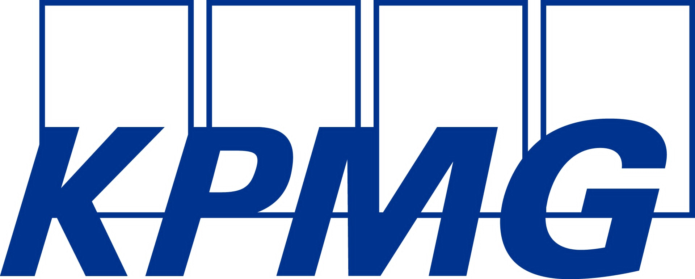

<!DOCTYPE html>
<html lang="en">
<head>
   <meta charset="UTF-8">
   <meta name="viewport" content="width=device-width, initial-scale=1.0">
   <title>KPMG GenAI Dashboard</title>
   <script src="https://cdn.tailwindcss.com"></script>
   <script src="https://unpkg.com/react@18/umd/react.development.js" crossorigin></script>
   <script src="https://unpkg.com/react-dom@18/umd/react-dom.development.js" crossorigin></script>
   <script src="https://unpkg.com/@babel/standalone/babel.min.js"></script>
   <script src="https://unpkg.com/lucide@latest/dist/umd/lucide.min.js"></script>
   <script src="https://cdn.jsdelivr.net/npm/marked/marked.min.js"></script>

   <style>
       body {
           font-family: 'Inter', sans-serif;
           background-color: #f3f4f6;
       }
       :root {
           --color-primary: #00338D;
           --color-primary-light: #4c66ac;
           --color-primary-dark: #002260;
       }
       .bg-blue-600 { background-color: var(--color-primary) !important; }
       .hover\:bg-blue-700:hover { background-color: var(--color-primary-dark) !important; }
       .text-blue-600 { color: var(--color-primary) !important; }
       .text-blue-800 { color: var(--color-primary-dark) !important; }
       .border-blue-600 { border-color: var(--color-primary) !important; }
       .ring-blue-500:focus { --tw-ring-color: var(--color-primary) !important; }
       
       .scrollbar-hide::-webkit-scrollbar { display: none; }
       .scrollbar-hide { -ms-overflow-style: none; scrollbar-width: none; }
       
       @keyframes fadeIn { from { opacity: 0; } to { opacity: 1; } }
       @keyframes slideUp { from { transform: translateY(20px); opacity: 0; } to { transform: translateY(0); opacity: 1; } }
       .animate-fade-in { animation: fadeIn 0.2s ease-out; }
       .animate-slide-up { animation: slideUp 0.3s ease-out; }
       
   </style>
   <link href="https://fonts.googleapis.com/css2?family=Inter:wght@400;500;600;700&display=swap" rel="stylesheet">
</head>
<body>
   <div id="root"></div>

   <script type="text/babel">
      
       
       const CURRENT_USER_ID = 'user_123';

const MOCK_PROMPTS = [
            // Prompts KHÔNG THUỘC Partner
            {
                id: 1,
                status: 'public', // 'public', 'private', 'pending'
                ownerId: 'kpmg_admin', // ID của người tạo
                tags: { department: 'Tax & Legal', task: 'Analysis' },
                stats: { use_count: 152, rating: 4.3, rating_count: 120, userRating: 4, reviews: [] },
                isSaved: true,
                title: "Contract Review and Analysis",
                description: "Automatically identify languages, check grammar, and verify legal references in contracts.",
                details: {
                    value: "Reduces initial contract review time by 40% and ensures no critical Vietnamese regulatory references are missed.",
                    benefit: "Increases accuracy in multilingual contracts and standardizes initial legal triage.",
                    whenToUse: "Use when receiving new vendor contracts, NDAs, or bilingual service agreements."
                },
                exampleResult: "## Language Detection\n- Detected: English (Primary), Vietnamese (Secondary)\n\n## Legal Verification\n| Law Cited | Status | Notes |\n|---|---|---|\n| Commercial Law No. 36/2005/QH11 | Active | Applicable to Art. 4 |\n| Civil Code No. 91/2015/QH13 | Active | Foundation for liability section |",
                template: "You are an advanced multilingual legal AI.\nAnalyze document: [Document Name]\n1. Detect languages.\n2. Proofread [Target Language] sections for grammar.\n3. Verify status of these Vietnamese laws: [List of Laws]\nProvide output in a structured table."
            },
            {
                id: 2,
                status: 'public', ownerId: 'kpmg_admin',
                tags: { department: 'Finance', task: 'Data Extraction' },
                stats: { use_count: 210, rating: 4.8, rating_count: 185, userRating: 0, reviews: [] },
                isSaved: false,
                title: "Invoice Data Extraction",
                description: "Extract invoice number, date, total amount, and vendor details from images or PDFs.",
                details: {
                    value: "Automates manual data entry for AP teams, reducing errors by 95%.",
                    benefit: "Faster month-end close and real-time spend visibility.",
                    whenToUse: "Use for processing high volumes of non-standard vendor invoices."
                },
                exampleResult: "{\n  \"invoice_code\": \"INV-2024-001\",\n  \"date\": \"2024-01-15\",\n  \"total_amount\": 1500.00,\n  \"currency\": \"USD\",\n  \"vendor\": \"Acme Corp\"\n}",
                template: "Extract the following fields from the invoice text below:\n- Invoice Code\n- Invoice Date (YYYY-MM-DD)\n- Total Amount (numeric)\n- Vendor Name\n\nInvoice Text:\n[Paste Invoice Text Here]\n\nOutput as JSON only."
            },
            {
                id: 3, status: 'public', ownerId: 'kpmg_admin',
                tags: { department: 'All Departments', task: 'Analysis' },
                stats: { use_count: 95, rating: 3.5, rating_count: 20, userRating: 0, reviews: [] },
                isSaved: false,
                title: "Advanced Document Translation",
                description: "Translate the content in the document into the target language with high accuracy, preserving formatting...",
                details: { value: "N/A", benefit: "N/A", whenToUse: "N/A" },
                exampleResult: "// No example result available for this prompt yet.",
                template: " ROLE \nYou are an expert AI translator specializing in technical and business documents. You are fluent in both the source language and [Target Language (e.g., English)].\n\n INPUT \n- Document: [Document/Image Link]\n- Target Language: [Target Language (e.g., English)]\n- Tone: [Tone of voice (e.g., Formal, Professional)]\n- Target Audience: [Target Audience (e.g., Internal Team, External Clients, Legal Dept)]\n\nTASK \nTranslate the content from the document into the target language.\n\n REQUIREMENTS \n1.  High-Fidelity Translation: The translation must be accurate, fluent, and preserve the original meaning and nuance.\n2.  Formatting Preservation: Maintain *all* original formatting, including headers, sub-headers, bullet points, numbered lists, tables, and text styling (bold, italics).\n3.  Terminology Handling: Correctly handle and translate technical terminology, industry jargon, and multi-language content within the document.\n4.  Untranslatable Terms: Do not translate brand names, proper nouns, or specific legal codes unless explicitly requested. Keep them in their original form.\n\n OUTPUT \nProvide *only* the full, translated text below, ready for use."
            },
            {
                id: 4, status: 'public', ownerId: 'kpmg_admin',
                tags: { department: 'All Departments', task: 'Analysis' },
                stats: { use_count: 180, rating: 4.5, rating_count: 150, userRating: 5, reviews: [] },
                isSaved: true,
                title: "Report Summary and Analysis",
                description: "Summarize the main points of the report and analyze any highlighted...",
                details: { value: "N/A", benefit: "N/A", whenToUse: "N/A" },
                exampleResult: "// No example result available for this prompt yet.",
                template: " ROLE \nYou are a senior AI data analyst assistant. Your task is to read, understand, and provide a structured analysis of complex reports.\n\n INPUT \n- Report: [Document/Report Link]\n- Focus Area: [Highlighted Section]\n- Tone: [Tone of voice (e.g., Analytical, Concise)]\n\n TASK \nRead the provided report and generate a structured summary and analysis. The output must be presented in the specified tone.\n\n OUTPUT STRUCTURE \n\n1. Executive Summary\n- Provide 3-5 key bullet points that summarize the entire report's findings.\n\n2. Detailed Analysis: [Highlighted Section]\n- Provide a detailed breakdown and analysis of the specified focus area.\n- What are the main findings or issues in this section?\n\n3. Key Data & Trends\n- List any significant data points, statistics, or trends you identified from the report.\n\n4. Actionable Recommendations\n- Based on the report's findings, suggest 1-3 actionable recommendations.\n\n*(Self-Correction: Do not generate charts. Instead, describe the data and trends in text.)*"
            },
            {
                id: 5, status: 'public', ownerId: 'kpmg_admin',
                tags: { department: 'All Departments', task: 'Write Email' },
                stats: { use_count: 115, rating: 3.8, rating_count: 90, userRating: 0, reviews: [] },
                isSaved: false,
                title: "B2B Cold Call Script",
                description: "Draft a cold call script for a salesperson to introduce a service/product...",
                details: { value: "N/A", benefit: "N/A", whenToUse: "N/A" },
                exampleResult: "// No example result available for this prompt yet.",
                template: " ROLE \nYou are a master B2B sales scriptwriter, expert in creating engaging, persuasive, and natural-sounding cold call scripts.\n\n INPUT \n- Target Customer Profile: [Target Customer]\n- Service/Product: [Service/Product]\n- Key Benefit: [Single most important benefit]\n- Common Objection 1: [Objection 1 (e.g., I'm busy)]\n- Common Objection 2: [Objection 2 (e.g., It's too expensive)]\n- Call Objective: [Objective (e.g., Secure a 15-min demo appointment)]\n\n TASK \nDraft a complete cold call script, including transitions. The script should be concise and easy to deliver.\n\n SCRIPT OUTPUT \n\n1. Opener (Attention-Grabbing & Pattern Interrupt)\n- [Draft opener that breaks from the typical \"Hi, my name is...\" and mentions the Target Customer's context]\n\n2. Value Proposition (Concise & Benefit-Driven)\n- [Draft 1-2 sentences clearly stating the value of the [Service/Product] specifically for the [Target Customer]]\n\n3. Handling Objections (Acknowledge, Pivot, Re-close)\n- Objection 1: [Objection 1]\n  - Response: [Draft response]\n- Objection 2: [Objection 2]\n  - Response: [Draft response]\n\n4. Call to Action (Clear & Low-Friction)\n- [Draft the closing question to achieve the [Objective]]\n\n5. Follow-up Email Template (If VM or No Answer)\n- Subject: [Draft subject line]\n- Body: [Draft concise email body referencing the call attempt and value prop]"
            },
            {
                id: 6, status: 'public', ownerId: 'kpmg_admin',
                tags: { department: 'Tax & Legal', task: 'Compare' },
                stats: { use_count: 80, rating: 4.1, rating_count: 65, userRating: 0, reviews: [] },
                isSaved: false,
                title: "Regulation Comparison",
                description: "Compare the regulations in the document with current Vietnamese laws and highlight changes...",
                details: { value: "N/A", benefit: "N/A", whenToUse: "N/A" },
                exampleResult: "// No example result available for this prompt yet.",
                template: " ROLE \nYou are an AI legal-tech specialist with expertise in Vietnamese regulatory comparison.\n\n INPUT \n- Document 1: [Old Regulation/Document 1]\n- Document 2: [New Regulation/Current Vietnamese Law]\n- Translation (if needed): [Target Language]\n- Tone: [Tone of voice (e.g., Legal, Clear)]\n\n TASK \nPerform a detailed, section-by-section comparison of the two documents. The output must be in the specified tone.\n\n OUTPUT STRUCTURE \n\n1. Executive Summary of Key Changes\n- Provide a high-level overview (3-5 bullet points) of the most critical differences or new provisions found in Document 2.\n\n2. Detailed Comparative Analysis\n- Present the comparison in a structured table format for clarity.\n\n| Section / Topic | [Old Regulation/Document 1] | [New Regulation/Current Vietnamese Law] | Analysis of Change |\n|---|---|---|---|\n| [Section 1 Title] | [Summary of content] | [Summary of content] | [e.g., 'New requirement added', 'Threshold changed from X to Y', 'Section removed'] |\n| [Section 2 Title] | ... | ... | ... |\n\n3. Translation of Critical Sections (if requested)\n- If a [Target Language] was specified, provide the translation for any sections identified as critical in the analysis.\n"
            },
            {
                id: 7, status: 'public', ownerId: 'kpmg_admin',
                tags: { department: 'All Departments', task: 'Compare' },
                stats: { use_count: 50, rating: 4.0, rating_count: 10, userRating: 0, reviews: [] },
                isSaved: false,
                title: "Scan Data Comparison",
                description: "Read & Extract information from Scanned Documents. Compare extracted data with form data to detect discrepancies.",
                details: { value: "N/A", benefit: "N/A", whenToUse: "N/A" },
                exampleResult: "// No example result available for this prompt yet.",
                template: " ROLE \nYou are a high-precision AI data auditor. Your task is to find discrepancies between a scanned document and a data source.\n\n INPUT \n- Source 1 (Scanned): [Scanned Document Link]\n- Source 2 (Data): [Form Data Link/Source]\n\n TASK \n1.  Read and extract all relevant information from Source 1.\n2.  Compare the extracted data field-by-field against Source 2.\n3.  Identify and list all discrepancies, missing information, or mismatches found.\n\n OUTPUT REPORT \n\nData Reconciliation Report\n--------------------------------\nSummary: [e.g., 3 discrepancies found.]\n\nDiscrepancy List:\n\n- Field: [Field Name 1]\n  - Value in [Scanned Document Link]: [Value]\n  - Value in [Form Data Link/Source]: [Value]\n\n- Field: [Field Name 2]\n  - Value in [Scanned Document Link]: [Value]\n  - Value in [Form Data Link/Source]: [Value]\n\n- Field: [Field Name 3]\n  - Value in [Scanned Document Link]: [Value] (e.g., Not Found)\n  - Value in [Form Data Link/Source]: [Value]\n\n(If no discrepancies are found, state \"No discrepancies found.\")"
            },
            {
                id: 8, status: 'public', ownerId: 'kpmg_admin',
                tags: { department: 'Consulting', task: 'Analysis' },
                stats: { use_count: 35, rating: 4.2, rating_count: 8, userRating: 0, reviews: [] },
                isSaved: false,
                title: "Company Screening and Analysis",
                description: "Extract data from documents, standardize it, apply scoring algorithms, and rank companies based on criteria.",
                details: { value: "N/A", benefit: "N/A", whenToUse: "N/A" },
                exampleResult: "// No example result available for this prompt yet.",
                template: " ROLE \nYou are an expert AI business and M&A analyst. Your task is to screen and rank companies based on specific criteria.\n\n INPUT \n- Data Source: [Document/Data Source]\n- Screening Criteria: [List Criteria (e.g., scale, industry, financial status, location)]\n- Weighting (Optional): [e.g., financial status (40%), scale (30%)]\n\n TASK \nPerform a screening of companies from the data source against the criteria.\n\n OUTPUT STRUCTURE \n\n1. Scoring Methodology\n- Explain the scoring logic applied (e.g., \"Companies were scored 1-5 for each criterion. Weighting was applied as specified.\")\n\n2. Ranked List of Companies\n- Present a table of all screened companies, ranked by their total score.\n| Rank | Company Name | Score | Key Finding |\n|---|---|---|---|\n| 1 | ... | ... | ... |\n| 2 | ... | ... | ... |\n\n3. Qualitative Report (Top 3)\n- Provide a brief qualitative summary for the top 3 ranked companies, explaining why they scored highly based on the [List Criteria].\n\n4. Visuals (Text-based)\n- Generate a simple text-based bar chart or summary graphic representing the score distribution."
            },
            {
                id: 9, status: 'public', ownerId: 'kpmg_admin',
                tags: { department: 'All Departments', task: 'Analysis' },
                stats: { use_count: 70, rating: 4.6, rating_count: 22, userRating: 0, reviews: [] },
                isSaved: false,
                title: "Team Budget Planning & Analysis",
                description: "Consolidate data from multiple sources (ERP, Excel), forecast costs, and detect spending anomalies.",
                details: { value: "N/A", benefit: "N/A", whenToUse: "N/A" },
                exampleResult: "// No example result available for this prompt yet.",
                template: " ROLE \nYou are an expert AI Financial Planning & Analysis (FP&A) assistant.\n\n INPUT \n- Data Source: [Budget Data Source (e.g., ERP export, Excel sheet)]\n- Team/Department: [Team/Department Name]\n- Time Period for Forecast: [Time Period]\n\n TASK \nAnalyze the provided budget data, forecast costs, and identify anomalies.\n\n OUTPUT REPORT \n\n1. Data Consolidation Summary\n- [State that data from [Budget Data Source] has been consolidated.]\n\n2. Predictive Cost Forecast\n- Provide a cost forecast for the [Time Period] based on historical data and trends.\n- [e.g., \"Forecasted spend for [Time Period] is $X, a Y% increase/decrease driven by...\"].\n\n3. Anomaly Detection (Top 5)\n- Identify the top 5 most significant anomalies, non-compliant costs, or budget deviations. Provide a brief explanation for each.\n  1. [Anomaly 1: e.g., $500 spend on 'Uncategorized' - Explanation: Lacks proper coding.]\n  2. ...\n\n4. Dashboard Recommendations (Text-based)\n- Describe 3 key charts that should be on a dashboard for this data:\n  1. Budget vs. Actual by Cost Category: [Description]\n  2. Monthly Cost Trend (Last 6 Months): [Description]\n  3. Top 5 Expense Categories by Variance: [Description]"
            },
            {
                id: 10, status: 'public', ownerId: 'kpmg_admin',
                tags: { department: 'All Departments', task: 'Write Email' },
                stats: { use_count: 120, rating: 4.7, rating_count: 45, userRating: 0, reviews: [] },
                isSaved: false,
                title: "Smart Email Drafting",
                description: "Automatically draft emails using templates and dynamic data, understanding context and customizing tone.",
                details: { value: "N/A", benefit: "N/A", whenToUse: "N/A" },
                exampleResult: "// No example result available for this prompt yet.",
                template: " ROLE \nYou are an expert AI business communication assistant. You write clear, concise, and effective emails.\n\n INPUT \n- Context: [Provide communication context (e.g., Resignation notice, Confirmation of meeting, Reminder for overdue task)]\n- Recipient: [Recipient Name/Role (e.g., My Manager, Client, Project Team)]\n- Key Information: [List all key data points, names, deadlines, task details to include]\n- Tone: [Tone of voice (e.g., Formal, Professional, Friendly, Persuasive)]\n- Desired Outcome: [What should the recipient do or know after reading this? (e.g., Confirm the time, Approve the request, Be aware of the change)]\n\n TASK \nDraft a complete email based on the inputs. Provide 2-3 subject line options.\n\n OUTPUT \n\nSubject Options:\n1. [Subject 1]\n2. [Subject 2]\n\nEmail Body:\n\n[Drafted email body, formatted professionally]"
            },
            {
                id: 11, status: 'public', ownerId: 'kpmg_admin',
                tags: { department: 'All Departments', task: 'Write Email' },
                stats: { use_count: 85, rating: 4.3, rating_count: 15, userRating: 0, reviews: [] },
                isSaved: false,
                title: "Email Reminder Sequence Drafting",
                description: "Set up an automated email reminder and send a follow-up if no response is received after the deadline.",
                details: { value: "N/A", benefit: "N/A", whenToUse: "N/A" },
                exampleResult: "// No example result available for this prompt yet.",
                template: " ROLE \nYou are an AI assistant skilled in creating effective and automated communication workflows.\n\n INPUT \n- Context: We need to remind [Recipient Role (e.g., All Employees, Project Team)] about [Task/Deadline (e.g., completing the compliance training)].\n- Deadline: [Date/Time of deadline]\n\n- Initial Reminder (to be sent [Time before deadline, e.g., 3 days before])\n  - Tone: [e.g., Friendly, Professional]\n  - Key Info: [Details of the task, link to training, time required]\n\n- Follow-up Reminder (to be sent [Time after deadline, e.g., 1 day after] if no response/completion)\n  - Tone: [e.g., Firm, Urgent, Final Notice]\n  - Key Info: [Reiterate deadline has passed, importance of completion, consequences if any]\n\n TASK \nGenerate the subject line and body text for both emails in the sequence.\n\n OUTPUT \n\n EMAIL 1: INITIAL REMINDER \n\nSubject: [Drafted subject line]\n\nBody:\n[Drafted body text for the initial reminder]\n\n EMAIL 2: FOLLOW-UP (NO RESPONSE) \n\nSubject: [Drafted subject line for follow-up]\n\nBody:\n[Drafted body text for the follow-up reminder]"
            },
            {
                id: 12, status: 'public', ownerId: 'kpmg_admin',
                tags: { department: 'Audit', task: 'Analysis' },
                stats: { use_count: 45, rating: 4.1, rating_count: 10, userRating: 0, reviews: [] },
                isSaved: false,
                title: "Key Risk Identification from Financials",
                description: "Analyze a provided trial balance or financial statement to identify key risk areas for the audit plan.",
                details: { value: "N/A", benefit: "N/A", whenToUse: "N/A" },
                exampleResult: "// No example result available for this prompt yet.",
                template: " ROLE \nYou are an AI Audit Analyst. Your expertise is in financial statement analysis and risk assessment based on ISA (International Standards on Auditing).\n\n INPUT \n- Data: [Link to Trial Balance / Financial Statements]\n- Client Industry: [Client Industry (e.g., Manufacturing, Retail)]\n- Prior Year Issues (Optional): [List any known issues from prior year audit]\n\n TASK \nAnalyze the provided financial data in the context of the client's industry. Identify the top 5 key risk areas for the upcoming audit.\n\n OUTPUT STRUCTURE \n\nAudit Risk Assessment Report\n--------------------------------\nBased on the analysis of [Link to Trial Balance / Financial Statements], the following top 5 risks are identified:\n\n1.  Risk: [e.g., Revenue Recognition]\n    Indicator: [e.g., Significant increase in sales (25%) in Q4, above industry average.]\n    Why it's a Risk: [e.g., Potential for management override to meet year-end targets. Risk of cutoff errors.]\n\n2.  Risk: [e.g., Inventory Valuation]\n    Indicator: [e.g., Inventory turnover days increased from 60 to 90 days.]\n    Why it's a Risk: [e.g., Indicates slow-moving stock. High risk of obsolescence and overvaluation.]\n\n3.  Risk: ...\n4.  Risk: ...\n5.  Risk: ..."
            },
            {
                id: 13, status: 'public', ownerId: 'kpmg_admin',
                tags: { department: 'Audit', task: 'Write Email' },
                stats: { use_count: 60, rating: 4.3, rating_count: 15, userRating: 0, reviews: [] },
                isSaved: false,
                title: "Audit Procedure Explanation (Client Email)",
                description: "Draft a clear, non-technical explanation of a specific audit procedure (e.g., sample testing) for a client.",
                details: { value: "N/A", benefit: "N/A", whenToUse: "N/A" },
                exampleResult: "// No example result available for this prompt yet.",
                template: " ROLE \nYou are a Senior Audit Manager. You are skilled at communicating complex audit concepts to clients in simple, clear, and professional language.\n\n INPUT \n- Audit Procedure: [Name of procedure (e.g., Accounts Receivable Confirmation)]\n- Client Contact Name: [Client Name]\n- Reason for Email: [e.g., To request their help in the process]\n- Tone: [Professional, Friendly]\n\n TASK \nDraft an email to the client explaining what the [Name of procedure] is, why we perform it, and what (if anything) we need from them.\n\n OUTPUT \n\nSubject: Audit Update: Our [Name of procedure] Process\n\nEmail Body:\n\nDear [Client Name],\n\nI hope this email finds you well.\n\nAs part of our ongoing audit, we will be performing a procedure called [Name of procedure]. I wanted to take a moment to briefly explain what this is and why we do it.\n\nWhat is [Name of procedure]?\n[Provide a 1-2 sentence, non-technical explanation. e.g., For AR Confirmation: 'This is a standard procedure where we independently verify the account balances your customers owe you as of the year-end.']\n\nWhy do we do this?\n[Provide a 1-sentence benefit-driven reason. e.g., 'This helps us confirm the accuracy of your financial statements in the Accounts Receivable area.']\n\nWhat we need from you:\n[Clearly list any action items. e.g., 'To do this, we will shortly provide a list of customers we've selected. We would appreciate your team's assistance in providing contact information for these customers.']\n\nThank you for your cooperation. Please let me know if you have any questions.\n\nBest regards,\n\n[Your Name]\nSenior Audit Manager"
            },
            {
                id: 14, status: 'public', ownerId: 'kpmg_admin',
                tags: { department: 'Deal', task: 'Analysis' },
                stats: { use_count: 55, rating: 4.7, rating_count: 18, userRating: 0, reviews: [] },
                isSaved: false,
                title: "Due Diligence Red Flag Summary",
                description: "Review a data room index or set of documents to summarize potential 'red flag' issues for a due diligence report.",
                details: { value: "N/A", benefit: "N/A", whenToUse: "N/A" },
                exampleResult: "// No example result available for this prompt yet.",
                template: " ROLE \nYou are a Senior M&A Due Diligence Analyst. You have a sharp eye for identifying critical risks, deal-breakers, and 'red flags' from limited information.\n\n INPUT \n- Data Source: [Link to Data Room Index / List of Documents]\n- Transaction Type: [e.g., Acquisition of Target by Client]\n- Target Industry: [Target Industry]\n\n TASK \nReview the provided data source and identify potential 'red flags' or critical areas of concern that require immediate investigation. Categorize these flags.\n\n OUTPUT STRUCTURE \n\nPreliminary Due Diligence Red Flag Report\n--------------------------------------------\nBased on a review of [Data Source], the following high-priority areas ('red flags') have been identified for further investigation:\n\n1. Financial Red Flags:\n [e.g., Missing audited financial statements for the last 2 years.]\n [e.g., Heavy reliance on a single customer (Customer X) noted in folder 4.5.]\n\n2. Legal & Compliance Red Flags:\n [e.g., Folder 6.2 'Litigation' contains 5 active cases, but no summary file.]\n [e.g., Key intellectual property (IP) appears to be registered in the founder's name, not the company's (Folder 8.1).]\n\n3. Operational Red Flags:\n [e.g., High employee turnover rates mentioned in HR reports (Folder 5.3).]\n [e.g., No formal contracts in place for key suppliers (Folder 3.1).]\n\n4. Missing Information:\n [e.g., No documents found relating to cybersecurity policies or breach reports.]\n [e.g., Tax filings for 2023 are not yet uploaded.]"
            },
            {
                id: 15, status: 'public', ownerId: 'kpmg_admin',
                tags: { department: 'Deal', task: 'Content Creation' },
                stats: { use_count: 30, rating: 4.4, rating_count: 9, userRating: 0, reviews: [] },
                isSaved: false,
                title: "Investment Teaser Drafting",
                description: "Draft a compelling, anonymous investment teaser for a sell-side engagement.",
                details: { value: "N/A", benefit: "N/A", whenToUse: "N/A" },
                exampleResult: "// No example result available for this prompt yet.",
                template: " ROLE \nYou are an expert Investment Banking Analyst. You specialize in creating compelling, anonymous 'teaser' documents for sell-side M&A mandates.\n\n INPUT \n- Project Name: [e.g., Project Phoenix]\n- Target Industry: [e.g., Niche SaaS for Logistics]\n- Target Description (Anonymized): [e.g., 'A leading B2B SaaS provider in Southeast Asia']\n- Key Investment Highlights (3-5 bullets): [e.g., 'CAGR of 40% over 3 years', 'Blue-chip client base', 'Proprietary IP']\n- Anonymized Financials (Table): [e.g., Year | Revenue | EBITDA\n2022A | $10M | $3M\n2023A | $14M | $4.5M\n2024E | $20M | $7M]\n\n TASK \nDraft a professional, one-page investment teaser based on the inputs. The teaser MUST be anonymous (no company name) and persuasive.\n\n OUTPUT \n\n(Header) Confidential: For Discussion Purposes Only\n\nProject [Project Name]\nOpportunity to Acquire [Target Description]\n\nCompany Overview:\n[Draft a 2-3 sentence anonymous overview of the company's business model and market position based on the inputs.]\n\nKey Investment Highlights:\n [Drafted Highlight 1, e.g., 'Market Leader in a High-Growth Niche']\n [Drafted Highlight 2, e.g., 'Strong, Double-Digit Revenue Growth']\n [Drafted Highlight 3, e.g., 'Proprietary & Scalable Technology Platform']\n [Drafted Highlight 4, e.g., 'Long-term Contracts with Blue-Chip Clients']\n\nSummary Financials (USD M):\n| | 2022A | 2023A | 2024E |\n|---|---|---|---|\n| Revenue | $10.0 | $14.0 | $20.0 |\n| EBITDA | $3.0 | $4.5 | $7.0 |\n\n(Note: Provide a text-based bar chart for Revenue growth if possible)\n\nTransaction Process:\n[Your Firm Name] is acting as the exclusive financial advisor to [Target Description] in relation to a potential strategic transaction. Interested parties will be required to sign a Non-Disclosure Agreement (NDA) to receive further information."
            },
            {
                id: 16, status: 'public', ownerId: 'kpmg_admin',
                tags: { department: 'Shared Services', task: 'Write Email' },
                stats: { use_count: 75, rating: 4.0, rating_count: 20, userRating: 0, reviews: [] },
                isSaved: false,
                title: "New IT Policy Communication",
                description: "Draft a firm-wide email communicating a new IT policy (e.g., password updates, new software rollout).",
                details: { value: "N/A", benefit: "N/A", whenToUse: "N/A" },
                exampleResult: "// No example result available for this prompt yet.",
                template: " ROLE \nYou are an IT Communications Specialist. You write emails that are clear, concise, and drive action from all staff.\n\n INPUT \n- Policy Name: [e.g., Mandatory Multi-Factor Authentication (MFA) Rollout]\n- Effective Date: [Date]\n- Action Required by Staff: [e.g., 'Register your mobile device for MFA before the deadline']\n- Deadline for Action: [Date]\n- What happens if not done? [e.g., 'You will lose access to all firm applications']\n- Link for Help/Instructions: [Link]\n\n TASK \nDraft a firm-wide email communicating this new IT policy. The tone should be professional, clear, and slightly urgent.\n\n OUTPUT \n\nSubject Options:\n1.  Action Required: New IT Security Policy - [Policy Name] by [Deadline for Action]\n2.  Important: Mandatory Update to Your Account Security ([Policy Name])\n\nEmail Body:\n\nDear Colleagues,\n\nTo enhance the security of our firm's data and client information, we are implementing a new IT policy: [Policy Name].\n\nThis will be effective from [Effective Date].\n\nWhat This Means for You:\n[Brief 1-2 sentence explanation of the policy, e.g., 'MFA adds an extra layer of security by requiring you to approve login attempts from your mobile device.']\n\nAction Required by [Deadline for Action]:\nAll staff are required to [Action Required by Staff].\n\nDeadline: [Deadline for Action]\nInstructions: [Link for Help/Instructions]\n\nImportant: Failure to complete this action by the deadline will result in [What happens if not done?].\n\nWe appreciate your cooperation in keeping our firm secure.\n\nIf you have any issues, please contact the IT Helpdesk.\n\nThank you,\nIT Department"
            },
            {
                id: 17, status: 'public', ownerId: 'kpmg_admin',
                tags: { department: 'Shared Services', task: 'Job Description' },
                stats: { use_count: 65, rating: 4.5, rating_count: 12, userRating: 0, reviews: [] },
                isSaved: false,
                title: "Job Description Creation",
                description: "Create a comprehensive job description for a new role within the firm.",
                details: { value: "N/A", benefit: "N/A", whenToUse: "N/A" },
                exampleResult: "// No example result available for this prompt yet.",
                template: " ROLE \nYou are an expert HR Talent Acquisition Specialist. You write job descriptions that are clear, inclusive, and attract top-tier candidates.\n\n INPUT \n- Job Title: [Job Title]\n- Department: [Department (e.g., Audit, Tax, Shared Services)]\n- Reports to: [Manager Title]\n- Key Responsibilities (3-5 bullets): [e.g., 'Manage client audit engagements', 'Lead junior team members', 'Review financial statements']\n- Required Qualifications (3-5 bullets): [e.g., 'CPA or equivalent', '5+ years experience in public accounting', 'Strong knowledge of IFRS']\n- Company Intro (Optional): [Short blurb about KPMG]\n\n TASK \nGenerate a full, professional job description based on the inputs.\n\n OUTPUT STRUCTURE \n\nJob Title: [Job Title]\nDepartment: [Department]\nLocation: [e.g., Ho Chi Minh City / Hanoi]\n\nAbout KPMG:\n[Insert Company Intro or a generic placeholder, e.g., 'Join a global network of professionals dedicated to providing Audit, Tax, and Advisory services.']\n\nRole Overview:\n[Draft 2-3 sentence summary of the role's purpose, based on inputs.]\n\nKey Responsibilities:\n [Drafted Responsibility 1 from input]\n [Drafted Responsibility 2 from input]\n [Drafted Responsibility 3 from input]\n [Drafted Responsibility 4 from input]\n [Drafted Responsibility 5 from input]\n\nQualifications and Skills:\n [Drafted Qualification 1 from input]\n [Drafted Qualification 2 from input]\n [Drafted Qualification 3 from input]\n [Drafted Qualification 4 from input]\n [Drafted Qualification 5 from input]\n Excellent communication and interpersonal skills.\n Strong analytical and problem-solving abilities.\n Ability to work effectively in a fast-paced, team-oriented environment.\n\nWhat We Offer:\n A competitive salary and benefits package.\n A culture of learning and professional development.\n Opportunities to work with a diverse range of clients."
            },
            {
                id: 18, status: 'public', ownerId: 'kpmg_admin',
                tags: { department: 'Consulting', task: 'Content Creation' },
                stats: { use_count: 40, rating: 4.6, rating_count: 11, userRating: 0, reviews: [] },
                isSaved: false,
                title: "Project Proposal Slide Content",
                description: "Generate content for a client project proposal slide (e.g., 'Our Understanding of the Problem', 'Our Approach').",
                details: { value: "N/A", benefit: "N/A", whenToUse: "N/A" },
                exampleResult: "// No example result available for this prompt yet.",
                template: " ROLE \nYou are an expert Management Consultant. You create clear, persuasive, and client-centric content for project proposals.\n\n INPUT \n- Slide Title: [Slide Title (e.g., 'Our Understanding of Your Challenge', 'Our Proposed Approach', 'Key Project Deliverables')]\n- Client's Problem (in brief): [e.g., 'Client is facing declining market share due to new digital competitors.']\n- Our Proposed Solution (in brief): [e.g., 'A 3-phase digital transformation strategy focused on customer experience, data analytics, and operational efficiency.']\n- Tone: [e.g., Confident, Empathetic, Expert]\n\n TASK \nDraft the content (key messages and bullet points) for the specified proposal slide, based on the problem and solution.\n\n OUTPUT \n\nContent for Slide: [Slide Title]\n\nKey Message (Headline): [Draft a 1-sentence headline for the slide that summarizes the main point. e.g., 'A strategic approach to reclaim market leadership and build a digital-first enterprise.']\n\nBullet Points:\n[For 'Our Approach' slide]:\n    Phase 1: Diagnostic & Benchmarking: We will analyze your current digital capabilities against market leaders to identify critical gaps and opportunities.\n    Phase 2: Strategy & Roadmap Design: We will co-develop a 3-year digital transformation roadmap, prioritizing initiatives with the highest ROI.\n    Phase 3: Implementation Support & Governance: We will establish a Project Management Office (PMO) to ensure the strategy is executed on time and on budget, driving measurable results.\n\n[For 'Our Understanding' slide]:\n    [e.g., 'Rapidly shifting consumer expectations are creating new pressures on your traditional business model.']\n    [e.g., 'New, agile competitors are leveraging data to capture market share and disrupt pricing.']\n    [e.g., 'Internal systems and processes are not currently optimized to support a seamless digital customer experience.']\n\n[For 'Deliverables' slide]:\n    [e.g., 'A comprehensive market and competitor analysis report.']\n    [e.g., 'A detailed 3-year digital transformation roadmap with clear financial-case and KPIs.']\n    [e.g., 'A governance framework for managing the transformation portfolio.']"
            },
            
            // Prompts cá nhân (My Library) cho CURRENT_USER_ID
            {
                id: 101,
                status: 'private', // Trạng thái "Riêng tư"
                ownerId: CURRENT_USER_ID, // Thuộc về user hiện tại
                tags: { department: 'Finance', task: 'Analysis' },
                stats: { use_count: 0, rating: 4.0, rating_count: 5, userRating: 0, reviews: [] },
                isSaved: false,
                title: "My Private: Weekly Budget Variance Check",
                description: "A custom prompt I built to check weekly budget vs actuals from pasted data.",
                details: {
                    value: "Saves me 1 hour a week.",
                    benefit: "Finds errors faster.",
                    whenToUse: "Every Monday AM."
                },
                exampleResult: "| Category | Budget | Actual | Variance |\n|---|---|---|---|\n| T&E | 1000 | 1200 | (200) |\n| Software | 500 | 500 | 0 |",
                template: "Analyze the following pasted data... [My custom instructions]"
            },
            {
                id: 102,
                status: 'private',
                ownerId: CURRENT_USER_ID, // Thuộc về user hiện tại
                tags: { department: 'Consulting', task: 'Content Creation' },
                stats: { use_count: 1, rating: 3.8, rating_count: 3, userRating: 0, reviews: [] },
                isSaved: false,
                title: "My Pending: Client Workshop Slide Generator",
                description: "Generates 5 key slides for a client workshop based on inputs.",
                details: {
                    value: "Standardizes workshop prep.",
                    benefit: "Faster turnaround for client meetings.",
                    whenToUse: "When prepping a new workshop."
                },
                exampleResult: "## Slide 1: Agenda\n- ...\n\n## Slide 2: Key Challenges\n- ...",
                template: "Generate 5 slides for [Topic]..."
            },
            {
                id: 103,
                status: 'private',
                ownerId: CURRENT_USER_ID, // Thuộc về user hiện tại
                tags: { department: 'All Departments', task: 'Write Email' },
                stats: { use_count: 12, rating: 4.0, rating_count: 2, userRating: 0, reviews: [] },
                isSaved: false,
                title: "My Approved: Quick Follow-up Email",
                description: "My personal template for sending a post-meeting follow-up.",
                details: { value: "N/A", benefit: "N/A", whenToUse: "N/A" },
                exampleResult: "Dear [Name],\n\nThank you for the meeting. Key takeaways...",
                template: "Draft follow up for [Context]..."
            },
            
            // --- CÁC PROMPT "PARTNER" MỚI (TỪ CSV) ---
            {
                "id": 201,
                "status": "public",
                "ownerId": "kpmg_admin",
                "tags": {
                    "department": "Partner",
                    "task": "Email Assistant"
                },
                "stats": {
                    "use_count": 40,
                    "rating": 3.8,
                    "rating_count": 17,
                    "userRating": 0,
                    "reviews": []
                },
                "isSaved": false,
                "title": "Weekly Email Risk & Opportunity Analysis",
                "description": "Analyze client emails weekly to identify risks and opportunities for timely action.",
                "details": {
                    "value": "Provide Partners with a summarized dashboard of critical risks, priority issues, and potential opportunities extracted from client email communications.",
                    "benefit": " Automates email review to save time   Highlights critical compliance risks and deadlines   Detects potential business opportunities early  Improves decision making and client engagement",
                    "whenToUse": " - At the end of each week after collecting client emails  - Before preparing Partner briefing or risk review  - When identifying compliance deadlines or new opportunities early  Just copy the prompt and skip Copilot's follow-up questions (if any)"
                },
                "exampleResult": "### Weekly Risk & Opportunity Dashboard\n\n**1. Critical Risks & Escalations (High Priority):**\n\n- **Risk:** Client Acme Corp (Project Titan) is reporting significant dissatisfaction with the data migration timeline.\n- **Risk:** Potential compliance breach mentioned by Client Beta regarding new data sovereignty laws.\n\n**2. Upcoming Deadlines & Milestones:**\n\n- **Deadline:** Client Acme Corp (Tax Filing) - Final submission due EOD Friday.\n\n**3. New Business Opportunities (Potential):**\n\n- **Opportunity:** Client Beta mentioned a new internal project on 'GenAI governance'.\n\n**4. Suggested Partner Action:**\n\n- Immediately follow up with the Engagement Manager for Project Titan.\n- Forward 'GenAI governance' opportunity to the digital advisory team.",
                "template": "ROLE: You are an Al analyst supporting a KPMG Partner across all service lines (Audit, Tax, Advisory, Deal Advisory, Risk Consulting) in monitoring engagement health, compliance risks, client satisfaction, and business opportunities through weekly email analysis.\n\nThis analysis supports KPMG's commitment to delivering quality service and maintaining trusted relationships with clients while upholding professional standards.\n\nTASK\n\nAnalyze all emails from the past 7 days where user is direct recipient or CC'd and create a summary report with two sections:\n\nSECTION 1: RISKS\n\n- Identify and flag emails containing:\n Urgent requests or deadline warnings\n Client concerns or complaints\n Compliance or regulatory mentions\n Budget overruns or resource issues\n\nProject delays or blockers\n\n- Conflicting information or miscommunications\n\nSECTION 2: OPPORTUNITIES\n\n- Identify and flag emails containing:\n New business inquiries or proposals\n Expansion of existing client work\n\n- Positive client feedback or wins\n Strategic partnership discussions\n Cross-selling possibilities\n\n- Innovation or efficiency improvement ideas\n\n(Place this before the summary table)\nPartner Review\n\nPeriod: [Start Date] - [End Date]\n\nTotal Emails Analyzed: [Number]\nAnalysis Generated: [Date & Time]\n\nFocus Area: [Specific Service Line or Topic]\n\nFORMAT\n\nPART 1: EXECUTIVE SUMMARY TABLE\n\nCreate a summary table with these columns:\n\n- SECTION ( RISK/\n\n- Client (Client name)\n\nOPPORTUNITY)\n\n- Issue Category (Brief description)\n\n- Days Pending (Days since email received)\n\n- Action Due (Deadline or timeframe)\n\n- Est. Impact (Primary impact category - see categories below)\n\n- Financial Exposure (Amount at risk, opportunity value, or fee impact)\n\n- Confidence (Confidence Rating Framework: Rating Criteria Example HIGHExplicit keywords + clear context + direct statement\"\"We need to escalate this compliance issue\n\nimmediately\"\"MEDIUM Relevant keywords + some contextual indicators\"\"Can we discuss the\n timeline concerns?\"\"LOWIndirect references or ambiguous language\"\"Looking forward to\n exploring options\"\")\n\nInclude summary metrics:\n\nRisk counts by impact category\n\n- Key metrics (compliance incidents, quality issues, retention risk, revenue at risk,\n opportunities)\n\nPART 2: DETAILED ITEMS\n\nFor each item, use this structure:\n\n1. ITEM #[X]: [Brief Title]\n\n- Client:[Client Name]\n\nEngagement: [Engagement Code or Service Type]\n\n- Date: [Email Date] ([X days ago])\n\nConfidence\n\n- Impact Category:\n\nPRIMARY:[Impact Category] ([brief explanation])\n\nSECONDARY:[Impact Category] ([brief explanation])\n\nTERTIARY: [Impact Category] ([brief explanation - if applicable])\n\n2. Summary:\n\n[2-3 sentence summary: What is the situation? What are the key facts, amounts, deadlines?\n What is the context or history?]\n\n3. Key Evidence:\n\n[1-2 direct quotes from emails that demonstrate the issue clearly]\n\nBased on: [Keywords/patterns/signals that led to this classification]\n\n4. SUGGESTED ACTIONS:\n\n1 [APPROACH NAME]\n\n[1-2 sentences: Who does what]\n\n2 [APPROACH NAME] [Recommended if applicable]\n\n[1-2 sentences: Who does what]\n\n3 [APPROACH NAME]\n\n[1-2 sentences: Who does what]"
            },
            {
                "id": 202,
                "status": "public",
                "ownerId": "kpmg_admin",
                "tags": {
                    "department": "Partner",
                    "task": "Analysis"
                },
                "stats": {
                    "use_count": 96,
                    "rating": 4.4,
                    "rating_count": 36,
                    "userRating": 0,
                    "reviews": []
                },
                "isSaved": false,
                "title": "New Regulation Impact Assessment",
                "description": "Analyze new regulations or industry articles to identify compliance risks and service opportunities for your service line",
                "details": {
                    "value": "Provide Partners with actionable insights on regulatory or industry changes to ensure compliance and uncover new advisory opportunities",
                    "benefit": " Keeps clients compliant with latest regulations   Detects new service and advisory opportunities early   Enhances client trust and proactive engagement   Positions KPMG as a strategic advisor",
                    "whenToUse": " - After new regulation or article is published  - Before client strategy or compliance meetings  - When planning new service offerings  Just copy the prompt and skip Copilot's follow-up questions (if any)"
                },
                "exampleResult": "**Executive Insight: Nghị định 174/2025/NĐ-CP (VAT Reduction)**\n**Focus: Tax Compliance Services**\n\n***\n\n**1. Regulation Snapshot**\n\n- **Name:** Nghị định 174/2025/NĐ-CP - Policy on VAT Reduction\n- **Effective Date:** 01 July 2025 - 31 December 2026\n- **Key Provisions:**\n    - Implements **2% VAT rate reduction** (from 10% to 8%) for most goods and services.\n    - Applies uniformly across import, production, and commercial stages.\n    - Businesses using percentage-based VAT calculation receive **20% reduction in VAT calculation rate**.\n    - Requires **accurate classification and compliance reporting**.\n- **Source:** [Official Source: vbpl.vn & mof.gov.vn]\n\n***\n\n**2. Strategic Framework - SWOT Analysis for Tax Compliance Services**\n\n- **Strengths:**\n    - KPMG's deep tax advisory expertise and global VAT compliance methodologies.\n    - Established relationships with multinationals and large corporates in Vietnam.\n    - Proven frameworks for transaction compliance and indirect tax audits.\n\n- **Weaknesses:**\n    - Limited automation in VAT compliance for SMEs.\n    - Heavy reliance on manual processes for classification and reporting.\n    - Current service model lacks real-time compliance monitoring tools.\n\n- **Opportunities:**\n    - Advisory on **VAT reduction compliance** and eligibility assessments.\n    - Development of **digital VAT compliance platforms** integrated with ERP systems.\n    - Launch **Managed VAT Compliance Services** for SMEs and large enterprises.\n    - Cross-service collaboration: **Tax + Technology Advisory** for automation.\n\n- **Threats:**\n    - Competitors offering **tech-enabled compliance solutions** faster.\n    - Increased regulatory scrutiny and penalties for misclassification.\n    - Client dissatisfaction if KPMG does not provide integrated tech solutions.\n\n***\n\n**3. Department-Specific Opportunities (Tax Compliance)**\n\n- **New Service Offerings:**\n    - **VAT Impact Assessment** for clients across sectors.\n    - Advisory on **classification and documentation** for eligible goods/services.\n    - **Compliance Health Checks** for VAT reporting accuracy.\n\n- **Technology Enablement:**\n    - Develop **KPMG VAT Compliance Dashboard** with real-time alerts.\n    - API-based integration with ERP for automated VAT calculations.\n\n- **Managed Services:**\n    - End-to-end **Managed VAT Compliance Service**: monitoring, filing, and reporting.\n    - Subscription-based compliance monitoring with dashboards and alerts.\n\n- **Revenue Growth Areas:**\n    - **Training & Certification Programs** for CFOs and tax managers.\n    - Industry-specific compliance packages (Retail, Manufacturing, E-commerce).\n\n***\n\n**4. Partner Talking Points**\n\n- *\"How can we position KPMG as the go-to advisor for VAT compliance under Nghị định 174?\"*\n- *\"What alliances or in-house capabilities do we need for tech-enabled VAT compliance?\"*\n- *\"How do we scale managed services for SMEs while maintaining premium advisory for large corporates?\"*\n\n**KPMG Differentiator:**\n\nKPMG combines deep regulatory expertise with global technology alliances, delivering integrated compliance and digital transformation solutions unmatched in the market.",
                "template": "ROLE & CONTEXT\n\nYou are a Senior KPMG Regulatory & Strategic Analyst with expertise in compliance,\n industry regulations, and service innovation.\n\nYour task is to help a Partner understand how a new Vietnamese regulation creates risks\n AND multiple high-value opportunities for their department to expand services, innovate\n offerings, and capture growth\n\nThis briefing supports KPMG's commitment to quality, compliance, and growth, enabling\n Partners to proactively lead strategic initiatives.\n\nTASK\n\nGenerate a comprehensive executive insight that:\n\nSummarizes the Vietnamese regulation and its key provisions.\n\n- Highlights impacts on KPMG and the Partner's department (risks and opportunities).\n\n- Provides an extensive list of opportunities for the department (no limit):\n\n+ New service offerings\n\n+ Technology enablement\n\n+ Managed services\n\n+ Cross-service collaboration\n\n+ Revenue growth areas\n\n- Suggests strategic actions and KPMG solutions to capture these opportunities.\n\nBefore creating the briefing, do one of the following:\n\nAsk the user (only once):\n\n1. Which department or service line should the opportunities focus on? (e.g., Tax, Audit, Risk\n\nConsulting)\n\n2. Regulation Name or Reference\n\n3. Any specific client(s) to highlight (optional)\n\nIf details are not provided:\n\n- Al will automatically identify a recent Vietnamese regulation and create the briefing,\n including department-specific opportunities inferred from context.\n\nSOURCE CONSTRAINTS\n\nThe regulation must be from Vietnam.\n\n- Only use official and authoritative sources, including:\n\nLaw (Luật), Decree (Nghị định), Circular (Thông tư) issued by the Government or Ministry of\n Finance.\n\nOfficial guidance letters (Công văn) from the General Department of Taxation or Ministry of\n Finance (selected, not unofficial interpretations).\n\nOfficial Q&A and guidance pages from government portals (e.g., gdt.gov.vn, mof.gov.vn).\n Official Gazette or legal document portals:\n\nvbpl.vn - National Database of Legal Documents\n\nvanban.chinhphu.vn - Government Document Portal (signed PDF)\n congbao.chinhphu.vn - Official Gazette\n\nquochoi.vn - National Assembly documents (especially Resolutions)\n luatvietnam.vn - Quick reference (for comparison only, not official)\n - Do not use blogs, forums, or unofficial interpretations.\n\n- Always provide citations with links to official sources in the output.\n\nFORMAT\n\nUse clear, authoritative, and visually structured business language. Organize the output as:\n\n1. Regulation Snapshot\n\n- Name & Effective Date\n\n- 2-3 bullet points on key provisions\n\n2. Strategic Frameworks\n\n- Content Guidelines:\n\nStrengths:\n\n- Internal advantages KPMG has to address this regulation (e.g., expertise, technology,\n global network). - Existing compliance frameworks or methodologies that give KPMG an\n edge.\n\nWeaknesses:\n\n- Internal gaps or limitations (e.g., resource constraints, lack of automation, dependency on\n manual processes).\n\n- Areas where KPMG may struggle to adapt quickly.\n\nOpportunities:\n\n- New service offerings enabled by the regulation.\n Technology-driven solutions (automation, analytics).\n\n- Cross-service collaboration and managed services.\n\n- Revenue growth areas and client education initiatives.\n Threats:\n\nCompliance risks if adaptation is slow.\n\n- Competitors moving faster to capture market share.\n\n- Increased regulatory scrutiny or penalties.\n\nClient dissatisfaction if services are not updated promptly.\n\nRequirements:\n\nEach quadrant should have 3-4 bullet points minimum. Use concise, business-oriented\n language. Focus on actionable insights, not generic statements.\n\n3. Department-Specific Opportunities (Core Section)\n\n- Provide as many actionable opportunities as possible\n\n- Include urgency, potential revenue impact, and innovation ideas\n\n4. Partner Talking Points\n\n- 3 strategic questions to engage internally\n\n- 1 sentence on KPMG's differentiator\n\nCONSTRAINTS\n\n- No legal jargon\n\n- Focus on actionable growth opportunities for KPMG\n\n- No page limit - present insights in a clear, structured, and visually easy-to-read format"
            },
            {
                "id": 204,
                "status": "public",
                "ownerId": "kpmg_admin",
                "tags": {
                    "department": "Partner",
                    "task": "Content Creation"
                },
                "stats": {
                    "use_count": 63,
                    "rating": 4.2,
                    "rating_count": 38,
                    "userRating": 0,
                    "reviews": []
                },
                "isSaved": false,
                "title": "Executive Trend Briefing",
                "description": "Summarize industry trends and insights for Partners in a concise briefing.",
                "details": {
                    "value": "Equip Partners with up-to-date market intelligence for strategic conversations and client meetings.",
                    "benefit": " Saves time on research   Improves quality of client discussions   Positions KPMG as a trusted advisor   Supports opportunity identification",
                    "whenToUse": " - Before client meetings to provide market context  - When preparing strategic discussions or proposals  - For quarterly or monthly Partner updates  Just copy the prompt and skip Copilot's follow-up questions (if any)"
                },
                "exampleResult": "**Executive Trend Briefing: Advertising Industry - Vietnam (Next 12 Months)**\n\n**1. Executive Summary**\n\n- **Digital Advertising Surge:** Digital channels projected to capture **55-61% of ad spend by 2025**, driven by mobile-first consumers and social media dominance. (Source: statista.com)\n\n- **Regulatory Tightening:** Vietnam's amended Advertising Law (effective Jan 2026) introduces stricter rules for online ads, influencer accountability, and transparency—requiring immediate compliance planning. (Source: moj.gov.vn)\n\n- **Consumer Behavior Shift:** Young, tech-savvy population and rising middle class fueling demand for personalized, culturally resonant campaigns, especially during key festivals like Tet. (Source: mckinsey.com)\n\n**2. Trend Analysis**\n\n- **Trend 1: Digital Advertising Dominance**\n    - **Why It Matters:** Digital ad spend growing at **14% CAGR**, with social media, video, and influencer marketing leading. Brands that fail to pivot risk losing relevance. (Source: statista.com)\n    - **Urgency:** **Immediate**\n\n- **Trend 2: Regulatory Overhaul**\n    - **Why It Matters:** Non-compliance could lead to fines or reputational damage. (Source: moj.gov.vn)\n    - **Urgency:** **Medium-term**\n\n- **Trend 3: Mobile-First & Social Commerce**\n    - **Why It Matters:** With **70%+ smartphone penetration**, short-form video and live commerce on TikTok and Zalo are reshaping engagement. (Source: mckinsey.com)\n    - **Urgency:** **Immediate**\n\n- **Trend 4: Cultural Personalization**\n    - **Why It Matters:** Campaigns tied to local traditions (e.g., Tet) outperform generic ads. Emotional storytelling and humor resonate strongly. (Source: mckinsey.com)\n    - **Urgency:** **Medium-term**\n\n**3. Strategic Implications**\n\n- **Competitive Positioning:** Digital-first and compliance-ready brands will gain trust and market share.\n- **Operational Impact:** Requires investment in analytics, influencer vetting, and agile content production.\n- **Risk Management:** Non-compliance or tone-deaf campaigns could lead to penalties and reputational harm.\n\n**4. KPMG's Angle**\n\n- **Regulatory Compliance Advisory:** Interpret and implement new Advertising Law requirements.\n- **Digital Transformation Support:** Enable data-driven marketing strategies, programmatic ad solutions, and social commerce integration.\n- **Cultural Insight & Creative Strategy:** Advise on localization and consumer behavior analytics for impactful campaigns.",
                "template": "ROLE & CONTEXT\n\nYou are a senior KPMG Market & Strategic Analyst with expertise in macroeconomic trends,\n industry dynamics, and regulatory developments.\n\nYour task is to help a Partner prepare for high-level client discussions by providing a clear,\n concise briefing on emerging trends that impact their business and KPMG's service\n opportunities.\n\nThis supports KPMG's commitment to strategic insight, client trust, and proactive advisory.\n\nTASK\n\nGenerate a one-page executive trend briefing that:\n\nSummarizes 3-4 major trends relevant to the client's industry or sector.\n\n- Explains why these trends matter now (risks, opportunities, urgency).\n\nBefore creating the briefing, ask the Partner for (only once):\n\n- Client Industry or Sector\n\nGeographic Focus (Global / Regional / Country)\n\n- Time Horizon (e.g., next 6-12 months)\n\nFORMAT\n\nUse authoritative, simple business language. Structure the output as:\n\n1. Executive Summary\n\n- 3 bullet points on the most critical trends shaping the industry right now.\n\n2. Trend Analysis\n\nFor each trend:\n\nTrend Name (e.g., \"Al-driven Compliance Automation\")\n\n- Why It Matters: 1-2 sentences on impact (risks/opportunities)\n\n- Urgency: Immediate / Medium-term / Long-term\n\n3. Strategic Implications\n\n- How these trends affect client operations and competitive positioning.\n\n4. KPMG's Angle\n\n- 2-3 bullet points on how KPMG typically helps clients navigate these trends (e.g., advisory,\n technology enablement, risk consulting).\n\nSOURCES & RELIABILITY\n\nAll insights must be drawn from authoritative and verifiable sources to ensure accuracy and\n client trust. Acceptable sources include:\n\nKPMG Thought Leadership (Global Outlook, sector reports, regulatory updates)\n\nOfficial Regulatory Bodies (e.g., SEC, EU Commission, local regulators)\n\nLeading Market Intelligence (e.g., IMF, World Bank, OECD, Gartner, McKinsey, industry\n associations)\n\nReputable Financial & Economic Data Providers (Bloomberg, Reuters, S&P Global)\n Do not use unverified blogs, opinion pieces, or sources lacking clear attribution.\n\nAlways provide source name, publication date, and hyperlink for transparency next to the\n data provided.\n\nCONSTRAINTS\n\n- No technical jargon or lengthy reports\n\n- Focus on business relevance and actionable insight\n\n- Assume Partner has limited time (max 1 page)\n\nDELIVERABLE\n\nOne-page executive briefing only. No appendices or extra commentary."
            },
            {
                "id": 205,
                "status": "public",
                "ownerId": "kpmg_admin",
                "tags": {
                    "department": "Partner",
                    "task": "Analysis"
                },
                "stats": {
                    "use_count": 43,
                    "rating": 4.3,
                    "rating_count": 44,
                    "userRating": 0,
                    "reviews": []
                },
                "isSaved": false,
                "title": "Thought Leadership Drafting",
                "description": "Draft thought leadership articles showcasing Partner expertise and KPMG insights.",
                "details": {
                    "value": "Enable Partners to publish high-quality articles to build credibility and market presence.",
                    "benefit": " Enhances Partner visibility and reputation   Positions KPMG as an industry leader   Supports client engagement and trust   Saves time with structured drafting",
                    "whenToUse": " - Before major industry events  - When sharing perspectives on emerging trends  - For LinkedIn or KPMG Insights publication  Just copy the prompt and skip Copilot's follow-up questions (if any)"
                },
                "exampleResult": "Beyond Compliance: How the Next Wave of Tax Reform Will Reshape Corporate Strategy\n Subheadline: From global minimum taxes to carbon border pricing, tax is becoming a\n board-level lever for value creation-not just a cost to optimize.\n\nOpening Hook\n\nTax reform has crossed a tipping point. In the next 12-24 months, new rules-most notably\n the OECD's 15% global minimum tax and adjacent measures like carbon border pricing-will\n alter where profits land, how investment cases pencil out, and what \"good growth\" looks like.\n CEOs who treat these shifts as a strategic design problem, not a filing exercise, will set the\n pace. [oecd.org], [taxation-c....europa.eu], [taxation-c....europa.eu]\n\nTrend Analysis\n\n1) A global minimum tax changes the map.\n\nMore than 140 jurisdictions have endorsed the OECD/G20 Inclusive Framework's \"Pillar\n Two\" rules introducing a 15% effective tax floor for large multinationals (≥€750m revenue).\n The core mechanics-a qualified domestic minimum top-up tax (QDMTT), income inclusion\n rule (IIR), and undertaxed profits rule (UTPR)-aim to curb profit shifting and narrow rate\n differentials across jurisdictions. [oecd.org], [taxfoundation.org]\n\nImplementation is real, not theoretical. The EU's directive entered into force in December\n 2022 and requires Member States to apply Pillar Two from fiscal years starting in 2024 (IIR)\n and 2025 (UTPR), with many countries already live. [taxation-c....europa.eu],\n\n[taxfoundation.org]\n\nWhat's the scale?\n\nOECD analysts estimate Pillar Two will add roughly US\\$155-192 billion in annual corporate\n tax revenues and cut low-taxed profits by ~80%, with incentives to shift profit reduced by\n about half. Independent assessments place potential global revenue gains in the\n\nUS\\$139-220 billion range-directionally consistent, though subject to design and uptake.\n [taxnews.ey.com], [oecd.org], [taxfoundation.org]\n\n2) The U.S. adds its own minimum tax lever.\n\nSeparately, the U.S. corporate alternative minimum tax (CAMT) imposes a 15% minimum\n based on adjusted financial statement income for groups with average annual income over\n US\\$1 billion, effective for years beginning after Dec. 31, 2022. Proposed regulations\n released in 2024 clarified scope, computations, and interactions with credits-making CAMT\n a parallel, complex regime for large filers. [eitc.irs.gov], [kpmg.com]\n 3) Carbon border pricing is moving into the core tax conversation.\n\nThe EU's Carbon Border Adjustment Mechanism (CBAM) shifts into its definitive phase in\n 2026, eventually requiring importers of carbon-intensive goods (steel, cement, aluminum,\n fertilizers, hydrogen, electricity) to buy certificates mirroring EU ETS carbon prices. The\n current transitional reporting period (2023-2025) is already influencing supply chains,\n product design, and sourcing. [taxation-c....europa.eu], [epa.ie]\n\n4) Tax administration is going digital-fast.\n\nTax authorities are standardizing data and moving toward real-time reporting. OECD surveys\n indicate widespread adoption of digital identity, APIs, and Al in administration-redefining\n the cost of non-compliance and the importance of tax-ready data architectures. [oecd.org],\n [kpmg.com]\n\nStrategic Implications for CEOS\n Risks to anticipate\n\nMargin compression & capital allocation drift: QDMTTs neutralize incentives to book income\n in low-tax jurisdictions; projects reliant on tax arbitrage may underperform under a 15% floor.\n Re-underwrite major capex and M&A theses with Pillar Two and CAMT overlays.\n [taxfoundation.org], [taxnews.ey.com]\n\nData, systems, and disclosure exposure: GloBE computations are jurisdictional and\n data-hungry. Misaligned ledgers and fragmented ERPs elevate compliance risk and finance\n costs as filings (e.g., Top-Up Tax Information Returns) centralize. [pwc.com], [oecd.org]\n Policy volatility across markets: EU rules are in force, but timelines differ elsewhere.\n Divergence on safe harbors, administrative guidance, and peer reviews raises the risk of\n double taxation or disputes. [taxation-c....europa.eu], [bdo.global]\n\nCarbon cost creep at the border: CBAM shifts embedded emissions into landed cost.\n Export-oriented segments and EU-bound supply chains face a structural cost of carbon\n absent decarbonization or verified foreign carbon pricing. [taxation-c....europa.eu],\n [law.georgetown.edu]\n\nOpportunities to seize\n\nRe-optimize footprint for real economics: With arbitrage dampened, capital should follow\n operating fundamentals-talent, infrastructure, proximity to demand-while QDMTTs keep\n more value in-market. Expect a premium on productivity and scale efficiencies.\n [taxfoundation.org], [europarl.europa.eu]\n\nTax-advantaged decarbonization: Aligning products and inputs to lower embedded carbon\n can reduce CBAM outlays and preserve EU market access. Embedded emissions\n transparency can also differentiate in tenders. [taxation-c....europa.eu], [epa.ie]\n Investor-grade tax transparency: Moving early on Pillar Two disclosures and CAMT impacts\n can reduce controversy, strengthen credit and ESG narratives, and pre-empt regulatory\n queries. [ey.com], [dart.deloitte.com]\n\nData as a competitive asset: Building tax-ready data pipelines (legal entity, CbCR, ETR by\n jurisdiction) improves forecast accuracy and accelerates scenario planning across pricing,\n sourcing, and portfolio moves. [oecd.org], [taxathand.com]\n\nWhat CEOs Should Do Now (Next 180 Days)\n\nStand up a cross-functional \"Pillar Two + CAMT\" control tower.\n\nBring together Tax, Finance, Legal, Supply Chain, and Sustainability. Mandate a single\n source of truth for entity-by-entity effective tax rates and safe harbor eligibility (e.g.,\n transitional CbCR). [dart.deloitte.com], [oecd.org]\n\nRe-underwrite your top 10 value drivers.\n\nRefresh IRRs for major investments and acquisitions under a post-arbitrage world. Include\n CBAM in landed-cost models for EU-bound flows and price scenarios using ETS-linked\n certificate ranges. [taxation-c....europa.eu], [law.georgetown.edu]\n\nEngineer for filing certainty, not heroics.\n\nDesign processes to meet emerging central filing gateways (e.g., EU DAC9 for top-up tax\n information returns) and reduce duplicative country filings. Invest in data lineage and\n controls now-before audits begin. [pwc.com], [loyensloeff.com]\n\nLink tax and climate strategy.\n\nWhere exposure is material, prioritize suppliers with verifiable emissions data, renegotiate\n carbon pass-through terms, and align internal carbon pricing with CBAM trajectory.\n [taxation-c....europa.eu], [epa.ie]\n\nCommunicate with markets.\n\nUpdate guidance on effective tax rate sensitivity, disclose governance around Pillar Two and\n CAMT, and articulate how your footprint strategy adapts under the new rules. Investors\n reward clarity in periods of reform. [ey.com]\n\nKPMG's Perspective\n\nIn our work with global enterprises, the companies that outperform treat tax reform as a\n design constraint for strategy-embedding GloBE and carbon rules into capital allocation,\n operating model choices, and data architecture-rather than chasing relief jurisdiction by\n jurisdiction. We help leadership teams translate evolving rules into practical playbooks,\n underpinned by investor-grade data and scenario modeling. (Advisory support varies by\n jurisdiction and is provided by KPMG member firms.) [kpmg.com]\n\nClosing Call-to-Action\n\nTax reform is not a footnote to your earnings call it is a structural shift in how and where\n value accrues. The winning CEO agenda: rebalance the portfolio for real economics,\n hard-wire tax-ready data, and make carbon cost visible in every decision. Begin with a\n board-level session that pressure-tests your top investments and supply chains against Pillar\n Two, CAMT, and CBAM scenarios-and turn compliance into competitive advantage.\n [taxnews.ey.com], [eitc.irs.gov], [taxation-c....europa.eu]\n\nSources (selected): OECD Pillar Two overview (updated guidance, 2024-2025); EU\n Minimum Tax Directive (Dec. 22, 2022); OECD revenue impact assessments (Jan. 2023 &\n Jan. 2024); IRS CAMT page & proposed regulations (Sept./Oct. 2024); EU CBAM\n (regulatory timeline to 2026); OECD tax administration digitalization (2025)",
                "template": "ROLE & CONTEXT\n\nYou are a senior KPMG Thought Leadership Content Strategist with expertise in industry\n trends, regulatory insights, and strategic advisory.\n\nYour task is to help a Partner draft a high-impact thought leadership article that positions\n KPMG as a trusted advisor and innovator in the market.\n\nThis supports KPMG's commitment to credibility, client trust, and market leadership.\n\nTASK\n\nGenerate a draft article (800-1,000 words) that:\n\n- Explains a key industry trend or regulatory change and its implications.\n\n- Provides strategic insights for business leaders (risks, opportunities, actions).\n\n- Highlights KPMG's perspective and solutions without sounding promotional.\n\nBefore drafting, ask the Partner for (only once):\n\nTopic or Theme (e.g., ESG, Al in Audit, Tax Reform)\n\n- Target Audience (e.g., CFOs, CEOs, Risk Leaders)\n\nTone Preference (e.g., authoritative, conversational, visionary)\n\n- Any specific client examples or case studies to reference (optional)\n\nFORMAT\n\nUse clear, professional, and engaging language. Structure the article as:\n\n1. Headline & Subheadline\n\n- Catchy, thought-provoking, relevant to the trend.\n\n2. Opening Hook\n\n- 2-3 sentences that capture attention (why this matters now).\n\n3. Trend Analysis\n\n- Explain the trend or regulation in simple terms.\n\n- Include 2-3 data points or credible references.\n\n4. Strategic Implications\n\n- Risks and opportunities for business leaders.\n\nShort bullet points for clarity.\n\n5. KPMG's Perspective\n\n- How KPMG helps clients navigate this challenge (1-2 sentences, non-promotional).\n\n6. Closing Call-to-Action\n\n- Invite readers to think strategically or explore solutions.\n\nCONSTRAINTS\n\n- No jargon or overly technical language.\n\n- Avoid sounding like a sales pitch.\n\n- Focus on insight, credibility, and actionable ideas.\n\nSOURCES & RELIABILITY\n\nAll insights must be drawn from authoritative and verifiable sources to ensure accuracy and\n client trust. Acceptable sources include:\n\nKPMG Thought Leadership (Global Outlook, sector reports, regulatory updates)\n\nOfficial Regulatory Bodies (e.g., SEC, EU Commission, local regulators)\n\nLeading Market Intelligence (e.g., IMF, World Bank, OECD, Gartner, McKinsey, industry\n associations)\n\nReputable Financial & Economic Data Providers (Bloomberg, Reuters, S&P Global)\n Do not use unverified blogs, opinion pieces, or sources lacking clear attribution.\n\nInclude citation if you present the information (clearly state source link, name and publication\n date) for transparency.\n\nDELIVERABLE\n\nFull draft article (800-1,000 words) in a single response. No appendices or extra\n commentary."
            },
            {
                "id": 206,
                "status": "public",
                "ownerId": "kpmg_admin",
                "tags": {
                    "department": "Partner",
                    "task": "Content Creation"
                },
                "stats": {
                    "use_count": 0,
                    "rating": 0,
                    "rating_count": 0,
                    "userRating": 0,
                    "reviews": []
                },
                "isSaved": false,
                "title": "Create Power Brief for First Client Meeting",
                "description": "Generate a concise, one-page executive briefing for a Partner preparing for a first client meeting, including annual report analysis.",
                "details": {
                    "value": "Provide Partners with a concise, one-page executive briefing tailored for a client meeting, integrating industry trends and key financial highlights from the client's annual report.",
                    "benefit": "Saves Partner preparation time, ensures insights are relevant and data-driven (from annual report), and positions KPMG as strategically insightful from the first meeting.",
                    "whenToUse": "Use when preparing for an initial meeting with a new or prospective client where making a strong, informed first impression is critical."
                },
                "exampleResult": "**EXECUTIVE BRIEFING: Vinamilk - F&B Industry**\n\n*Source: Vinamilk 2024 Annual Report (https://www.vinamilk.com.vn/en/investor)*\n\n**1. Executive Summary - What Matters Most**\n\n- **Industry Trend:** Vietnam's dairy market remains resilient amid inflation and shifting consumer preferences toward premium nutrition and sustainability. Export markets expanded to 63 countries.\n\n- **Financial Highlights (2024):**\n    - Revenue: VND 61,824 billion (+2.2% YoY)\n    - Profit After Tax: VND 9,453 billion (+4.8% YoY)\n    - State Contribution: VND 4,569 billion (+11.3% YoY)\n\n- **Strategic Moves:** New technologies (6 HMOs in infant formula, Swedish ultrafiltration) and sustainability initiatives (recycling program, carbon-neutral farms).\n\n**2. Key Impacts**\n\n- **Opportunities:**\n    - Rising health-conscious demand supports premium dairy and functional products.\n    - Export diversification reduces reliance on domestic market volatility.\n\n- **Risks:**\n    - Raw material price volatility and global supply chain disruptions could pressure margins.\n    - Intensifying competition from regional players and plant-based alternatives.\n\n**3. Strategic Questions**\n\n1. *\"How will Vinamilk leverage technology and sustainability to differentiate in premium segments?\"*\n2. *\"What is the roadmap for international expansion, and which markets offer the highest ROI?\"*\n3. *\"How can Vinamilk mitigate commodity price risks while maintaining profitability?\"*\n\n**4. KPMG's Angle**\n\nKPMG helps F&B leaders navigate growth and resilience through supply chain optimization, ESG strategy, and digital transformation to sustain competitive advantage.",
                "template": "ROLE: You are a senior KPMG Strategic Analyst with deep expertise in\n\n[Topic/Industry/Regulation].\n\nTASK: Generate a concise, one-page executive briefing tailored for a Partner preparing for a\n client meeting.\n\nBefore creating the briefing, ask the Partner for:\n\n- Client Name\n\nClient Industry\n\nThen, find that Client's Anual Report on trusted sources for more materials and provide\n citation. If the information is not available, ask the user if they have Client's Anual Report.\n\nSOURCE CONSTRAINTS\n\n- Use official and authoritative sources only, including:\n\nClient's official website (Investor Relations section)\n\nStock Exchange portals (e.g., HOSE, HNX for Vietnam; SEC for U.S.)\n\nGovernment or regulatory portals for filings\n\nReputable financial databases (Bloomberg, Reuters, S&P Global)\n\n- For Vietnamese regulations or legal context, use:\n vbpl.vn - National Database of Legal Documents\n vanban.chinhphu.vn - Government Document Portal\n congbao.chinhphu.vn - Official Gazette\n\nquochoi.vn - National Assembly documents\n\nluatvietnam.vn - Quick reference (not official)\n\n- Do not use blogs, forums, or unofficial interpretations.\n\n- Always provide source name, publication date, and hyperlink for transparency.\n\nFORMAT:\n\nUse clear, authoritative, and simple business language. The output must include:\n\n1. Executive Summary: 3 bullet points on what matters most right now (include industry\n trends + key financial highlights from the client's annual report).\n\n2. Key Impacts: How this trend and the client's financial position affect their industry (risks,\n opportunities).\n\n3. Strategic Questions: 3 insightful questions to spark a strategic discussion with the client.\n 4. KPMG's Angle: A single sentence on how KPMG typically helps clients with this.\n\nCONSTRAINTS:\n\n- No long reports or technical jargon\n\n- Focus on relevance to the client's business and financial context\n\n- Assume the Partner has limited time and needs actionable insight\n\nDELIVERABLE:\n\nOne-page briefing only. No additional commentary or appendices."
            }
       ];
       
  
       const ALL_DEPARTMENTS = [...new Set(MOCK_PROMPTS.map(p => p.tags.department).filter(dept => dept !== 'Finance' && dept !== 'All Departments'))];
       const ALL_TASKS = [...new Set(['All Tasks', ...MOCK_PROMPTS.map(p => p.tags.task)])];

    
       
       const Icon = ({ name, size = 20, className = "", ...props }) => {
           const ref = React.useRef(null);
           React.useEffect(() => {
               if (!window.lucide) return;
               const pascalName = name.replace(/(^\w|-\w)/g, (clear) => clear.replace("-", "").toUpperCase());
               const iconKey = Object.keys(lucide.icons).find(key => key === pascalName)
                            || Object.keys(lucide.icons).find(key => key.toLowerCase() === name.replace(/-/g, '').toLowerCase());
               if (ref.current && iconKey && lucide.icons[iconKey]) {
                   const svg = lucide.createElement(lucide.icons[iconKey]);
                   svg.setAttribute('width', size);
                   svg.setAttribute('height', size);
                   svg.setAttribute('class', `lucide lucide-${name} ${className}`);
                   ref.current.innerHTML = '';
                   ref.current.appendChild(svg);
               }
           }, [name, size, className]);
           return <span ref={ref} className={`inline-flex shrink-0 items-center justify-center ${className}`} style={{ width: size, height: size }} {...props} />;
       };

       const ToastContext = React.createContext();
       
       const ToastProvider = ({ children }) => {
           const [toast, setToast] = React.useState(null);
           const showToast = React.useCallback((msg, type = 'success') => {
               setToast({ msg, type });
               setTimeout(() => setToast(null), 3000);
           }, []);
           
           return (
               <ToastContext.Provider value={showToast}>
                   {children}
                   {toast && (
                       <div className={`fixed bottom-5 right-5 px-5 py-3 rounded-lg shadow-lg text-white animate-fade-in z-50 ${toast.type === 'error' ? 'bg-red-600' : 'bg-gray-900'}`}>
                           {toast.msg}
                       </div>
                   )}
               </ToastContext.Provider>
           );
       };
       
       const useToast = () => {
           const context = React.useContext(ToastContext);
           if (!context) return () => {};
           return context;
       };
       
       const BaseModal = React.memo(({ isOpen, onClose, title, children, footer, maxWidth = 'max-w-lg' }) => {
           if (!isOpen) return null;
           
           return (
               <div 
                   className="fixed inset-0 bg-black/60 flex items-center justify-center z-40 p-4 animate-fade-in"
                   onClick={(e) => e.target === e.currentTarget && onClose()}
               >
                   <div className={`bg-white rounded-2xl w-full ${maxWidth} max-h-[90vh] flex flex-col shadow-2xl overflow-hidden animate-slide-up`}>
                       <div className="flex justify-between items-start p-6 border-b">
                         
                           {typeof title === 'string' ? (
                               <h2 className="text-2xl font-bold text-gray-900">{title}</h2>
                           ) : (
                               title
                           )}
                           <button onClick={onClose} className="text-gray-400 hover:text-gray-600 p-2 hover:bg-gray-100 rounded-full transition-colors"><Icon name="x" size={24} /></button>
                       </div>
                       
                  
                       <div className="flex-1 overflow-y-auto p-6 space-y-6 bg-gray-50">
                           {children}
                       </div>
                       
                  
                       {footer && (
                            <div className="p-4 bg-gray-100 border-t flex justify-end gap-3">
                                {footer}
                            </div>
                       )}
                   </div>
               </div>
           );
       });
       
const PromptEditorModal = React.memo(({ prompt, isOpen, onClose, onSave }) => {
         
            
            const [formData, setFormData] = React.useState({
                id: undefined,
                title: '',
                description: '',
                tags: {
                    department: 'All Departments',
                    task: 'Analysis',
                },
                template: '',
                details: { value: '', benefit: '', whenToUse: '' },
                exampleResult: ''
            });
            
            React.useEffect(() => {
                if (isOpen) {
                    
                    setFormData({
                        id: prompt?.id || undefined,
                        title: prompt?.title || '',
                        description: prompt?.description || '',
                        tags: prompt?.tags || { department: 'All Departments', task: 'Analysis' },
                        template: prompt?.template || '',
                        details: prompt?.details || { value: '', benefit: '', whenToUse: '' },
                        exampleResult: prompt?.exampleResult || '' 
                    });
                }
            }, [isOpen, prompt]);
            
            if (!isOpen) return null; 

            const handleChange = (e) => {
                const { name, value } = e.target;
                setFormData(prev => ({ ...prev, [name]: value }));
            };
            
            const handleTagChange = (e) => {
                const { name, value } = e.target;
                setFormData(prev => ({
                    ...prev,
                    tags: { ...prev.tags, [name]: value }
                }));
            };
            
            const handleSave = () => {
               
                onSave(formData);
            };

            const isNew = !prompt?.id;
            
        
            const modalTitle = (
                <div>
                    <h2 className="text-2xl font-bold text-gray-900 flex items-center gap-2">
                        {isNew ? 'Create New Prompt' : 'Edit Prompt'}
                    </h2>
                    <p className="text-gray-500 mt-1">
                        {isNew ? 'This prompt will be saved privately to your library.' : 'Changes will be saved to your private prompt.'}
                    </p>
                </div>
            );

            const modalFooter = (
                <>
                    <button
                        onClick={onClose}
                        className="px-5 py-2.5 rounded-lg font-semibold text-sm text-gray-700 bg-white border border-gray-300 hover:bg-gray-50 transition-colors"
                    >
                        Cancel
                    </button>
                    <button
                        onClick={handleSave}
                        className="px-5 py-2.5 rounded-lg font-semibold text-sm text-white bg-blue-600 hover:bg-blue-700 transition-colors"
                    >
                        {isNew ? 'Create Private Prompt' : 'Save Changes'}
                    </button>
                </>
            );

            return (
                <BaseModal 
                    isOpen={isOpen} 
                    onClose={onClose} 
                    title={modalTitle} 
                    footer={modalFooter}
                    maxWidth="max-w-2xl"
                >
                  
                    <div>
                        <label className="block text-sm font-medium text-gray-700 mb-1">Prompt title</label>
                        <input type="text" name="title" value={formData.title} onChange={handleChange} className="w-full p-2 border border-gray-300 rounded-lg"/>
                    </div>
                    
                    <div>
                        <label className="block text-sm font-medium text-gray-700 mb-1">Prompt description</label>
                        <textarea name="description" value={formData.description} onChange={handleChange} rows="3" className="w-full p-2 border border-gray-300 rounded-lg"></textarea>
                    </div>
                    
                    <div className="grid grid-cols-1 md:grid-cols-2 gap-6">
                        <div>
                            <label className="block text-sm font-medium text-gray-700 mb-1">Department (Tags)</label>
                            <select name="department" value={formData.tags.department} onChange={handleTagChange} className="w-full p-2 border border-gray-300 rounded-lg bg-white">
                                {ALL_DEPARTMENTS.map(dept => <option key={dept} value={dept}>{dept}</option>)}
                            </select>
                        </div>
                        <div>
                            <label className="block text-sm font-medium text-gray-700 mb-1">Task (Tags)</label>
                            <select name="task" value={formData.tags.task} onChange={handleTagChange} className="w-full p-2 border border-gray-300 rounded-lg bg-white">
                                {ALL_TASKS.map(task => <option key={task} value={task}>{task}</option>)}
                            </select>
                        </div>
                    </div>
                    
                    <div>
                        <label className="block text-sm font-medium text-gray-700 mb-1">Prompt details (Template)</label>
                        <textarea name="template" value={formData.template} onChange={handleChange} rows="8" className="w-full p-2 border border-gray-300 rounded-lg font-mono text-sm"></textarea>
                    </div>
                    
                  
                    <div>
                        <label className="block text-sm font-medium text-gray-700 mb-1">Sample Output (Expected result or format)</label>
                        <textarea 
                            name="exampleResult" 
                            value={formData.exampleResult} 
                            onChange={handleChange} 
                            rows="8" 
                            className="w-full p-2 border border-gray-300 rounded-lg font-mono text-sm bg-gray-900 text-gray-100"
                            placeholder={`{\n  "key": "value",\n  "example": "JSON or Markdown output"\n}`}
                        ></textarea>
                    </div>
              

                </BaseModal>
            );
       });
       
       const RatingModal = React.memo(({ prompt, isOpen, onClose, onSubmit }) => {
            const [rating, setRating] = React.useState(0);
            const [hoverRating, setHoverRating] = React.useState(0);
            const [comment, setComment] = React.useState('');
            const [optimizationPercentage, setOptimizationPercentage] = React.useState(0);

            React.useEffect(() => {
                if (isOpen && prompt) {
                
                    setRating(prompt.stats.userRating || 0);
                    setComment('');
                    setOptimizationPercentage(0);
                }
            }, [isOpen, prompt]);

            if (!isOpen || !prompt) return null; 

            const handleSubmit = () => {
                onSubmit(prompt.id, rating, optimizationPercentage, comment);
                onClose();
            };
            
            
            const modalTitle = (
                <div>
                    <h2 className="text-2xl font-bold text-gray-900">Your Feedback</h2>
                    <p className="text-gray-500 mt-1">For Prompt: "{prompt.title}"</p>
                </div>
            );
            
            const modalFooter = (
                <>
                    <button
                        onClick={onClose}
                        className="px-5 py-2.5 rounded-lg font-semibold text-sm text-gray-700 bg-white border border-gray-300 hover:bg-gray-50 transition-colors"
                    >
                        Cancel
                    </button>
                    <button
                        onClick={handleSubmit}
                        className="px-5 py-2.5 rounded-lg font-semibold text-sm text-white bg-blue-600 hover:bg-blue-700 transition-colors"
                    >
                        Submit Feedback
                    </button>
                </>
            );

            return (
                <BaseModal
                    isOpen={isOpen}
                    onClose={onClose}
                    title={modalTitle}
                    footer={modalFooter}
                    maxWidth="max-w-lg"
                >
                
                    <div>
                        <label className="block text-sm font-medium text-gray-700 mb-2">1. Your Rating (mandatory)</label>
                        <div className="flex items-center space-x-1">
                            {[1, 2, 3, 4, 5].map((star) => (
                                <button
                                    key={star}
                                    onMouseEnter={() => setHoverRating(star)}
                                    onMouseLeave={() => setHoverRating(0)}
                                    onClick={() => setRating(star)}
                                    className="transition-colors"
                                >
                                    <Icon 
                                        name="star" 
                                        size={32} 
                                        className={`
                                            ${(hoverRating >= star || rating >= star) 
                                                ? 'text-yellow-400 fill-yellow-400' 
                                                : 'text-gray-300'
                                            }
                                        `} 
                                    />
                                </button>
                            ))}
                        </div>
                    </div>
                    
                    <div>
                        <label className="block text-sm font-medium text-gray-700 mb-2">2. This prompt help you optimize your work by how much? (mandatory)</label>
                        <div className="flex items-center gap-4">
                            <input
                                type="range"
                                min="0"
                                max="100"
                                step="1"
                                value={optimizationPercentage}
                                onChange={(e) => setOptimizationPercentage(parseInt(e.target.value))}
                                className="w-full h-2 bg-gray-200 rounded-lg appearance-none cursor-pointer accent-blue-600"
                            />
                            <span className="font-semibold text-blue-600 text-lg w-12 text-right">{optimizationPercentage}%</span>
                        </div>
                    </div>

                    <div>
                        <label className="block text-sm font-medium text-gray-700 mb-1">3. Your Feedback (optional)</label>
                        <textarea 
                            value={comment} 
                            onChange={(e) => setComment(e.target.value)} 
                            rows="4" 
                            placeholder="What did you like or dislike about this prompt?"
                            className="w-full p-2 border border-gray-300 rounded-lg"
                        ></textarea>
                    </div>
                </BaseModal>
            );
       });
       
      

const Sidebar = React.memo(({ activeFilters, setActiveFilters, isCollapsed, toggleSidebar, savedCount }) => {
           
           // HÀM SETVIEW (ĐÃ REFACTOR)
           const setView = (viewName) => {
               
               setActiveFilters(prev => {
                   const newFilters = { ...prev, view: viewName };
                   
                   // Logic mới
                   switch (viewName) {
                       case 'department':
                           // Mặc định "Prompt Library" (Department) là "Partner"
                           newFilters.departmentId = 'Partner';
                           newFilters.task = 'All Tasks';
                           break;
                       case 'common':
                           // Mặc định "Common"
                           newFilters.departmentId = null;
                           newFilters.task = 'All Tasks';
                           break;
                       case 'myLibrary':
                       case 'myFavorites':
                           // Reset filters cho view cá nhân
                           newFilters.departmentId = null; // Sẽ không lọc theo phòng ban trong view này
                           newFilters.task = 'All Tasks';
                           break;
                       case 'news':
                           // Giữ nguyên
                           break;
                   }
                   
                   return newFilters;
               });
           };
           
           // HÀM SETFILTER (ĐÃ REFACTOR)
           // Set Task
           const setTask = (task) => {
               setActiveFilters(prev => ({ ...prev, task }));
           };
           
           // Set Department (tự động chuyển view)
           const setDepartment = (deptId) => {
               setActiveFilters(prev => ({
                   ...prev,
                   view: 'department', // Tự động chuyển view sang 'department'
                   departmentId: deptId
               }));
           };

           return (
               <aside className={`${isCollapsed ? 'w-20 px-4' : 'w-80 p-6'} bg-white border-r border-gray-200 flex-shrink-0 transition-all duration-300 flex flex-col z-20`}>
                   <div className={`flex items-center mb-10 ${isCollapsed ? 'justify-center' : 'justify-between'}`}>
                       {!isCollapsed && (
                           </img>)}
                       <button onClick={toggleSidebar} className="p-2 hover:bg-gray-100 rounded-lg text-gray-500 transition-colors">
                           <Icon name={isCollapsed ? "chevrons-right" : "chevrons-left"} size={20} />
                       </button>
                   </div>
                   <div className={`flex-1 space-y-8 ${isCollapsed ? 'hidden' : 'block'}`}>
                       
                       {/* Filter dropdowns */}
                       <div className="space-y-2">
                           <label className="text-xs font-semibold text-gray-500 uppercase tracking-wider">Department</label>

                           {/* === COMMON PROMPTS (ĐÃ REFACTOR) === */}
                           <button
                               onClick={() => setView('common')} // <-- THAY ĐỔI
                               className={`w-full flex items-center justify-center p-3 rounded-xl transition-all font-medium border ${
                                   activeFilters.view === 'common' // <-- THAY ĐỔI
                                   ? 'bg-blue-600 text-white border-blue-600 shadow-md'
                                   : 'bg-white text-gray-700 border-gray-300 hover:bg-gray-50'
                               }`}
                           >
                               <Icon name="layout-grid" size={18} className="mr-2" />
                               Common Prompts
                           </button>
                           {/* === END BUTTON === */}

                           <div className="relative">
                               <select className="w-full p-3 pl-4 pr-10 bg-white border border-gray-200 rounded-xl appearance-none focus:ring-2 focus:ring-blue-500 focus:border-blue-500 outline-none transition-all text-gray-700"
                                   value={activeFilters.view === 'department' ? activeFilters.departmentId : ''} // <-- THAY ĐỔI
                                   onChange={(e) => { if (e.target.value) { setDepartment(e.target.value) } }} // <-- THAY ĐỔI
                               >
                                   {/* === NEW PLACEHOLDER === */}
                                   <option value="" disabled>Or select a department...</option>

                                   {ALL_DEPARTMENTS.map(dept => <option key={dept} value={dept}>{dept}</option>)}
                               </select>
                               <Icon name="chevron-down" size={16} className="absolute right-4 top-1/2 -translate-y-1/2 text-gray-400 pointer-events-none" />
                           </div>
                       </div>
                       <div className="space-y-2">
                           <label className="text-xs font-semibold text-gray-500 uppercase tracking-wider">Task</label>
                           <div className="relative">
                               <select className="w-full p-3 pl-4 pr-10 bg-gray-50 border border-gray-200 rounded-xl appearance-none focus:ring-2 focus:ring-blue-500 focus:border-blue-500 outline-none transition-all font-medium text-gray-700"
                                   value={activeFilters.task} 
                                   onChange={(e) => setTask(e.target.value)} // <-- THAY ĐỔI
                               >
                                   {ALL_TASKS.map(task => <option key={task} value={task}>{task}</option>)}
                               </select>
                               <Icon name="chevron-down" size={16} className="absolute right-4 top-1/2 -translate-y-1/2 text-gray-400 pointer-events-none" />
                           </div>
                       </div>
                       
                       {/* View buttons */}
                       <div className="pt-6 border-t border-gray-100 space-y-2">
                           
                           {/* Nút News & Updates */}
                           <button onClick={() => setView('news')}
                               className={`w-full flex items-center justify-between p-4 rounded-xl transition-all group ${activeFilters.view === 'news' ? 'bg-blue-600 text-white shadow-md' : 'hover:bg-gray-50 text-gray-700'}`}>
                               <div className="flex items-center font-semibold">
                                   <Icon name="newspaper" size={24} className={`mr-3 ${activeFilters.view === 'news' ? 'text-white' : 'text-gray-400 group-hover:text-blue-600'}`} />
                                   News & Updates
                               </div>
                           </button>
                           {/* ===================== */}

                           {/* Prompt Library button (ĐÃ REFACTOR) */}
                           <button onClick={() => setView('department')} // <-- THAY ĐỔI
                               className={`w-full flex items-center justify-between p-4 rounded-xl transition-all group ${activeFilters.view === 'department' ? 'bg-blue-600 text-white shadow-md' : 'hover:bg-gray-50 text-gray-700'}`}> {/* <-- THAY ĐỔI */}
                               <div className="flex items-center font-semibold">
                                   <Icon name="layout-grid" size={24} className={`mr-3 ${activeFilters.view === 'department' ? 'text-white' : 'text-gray-400 group-hover:text-blue-600'}`} /> {/* <-- THAY ĐỔI */}
                                   Prompt Library 
                               </div>
                           </button>
                           
                           {/* My Library button */}
                           <button onClick={() => setView('myLibrary')}
                               className={`w-full flex items-center justify-between p-4 rounded-xl transition-all group ${activeFilters.view === 'myLibrary' ? 'bg-blue-600 text-white shadow-md' : 'hover:bg-gray-50 text-gray-700'}`}>
                               <div className="flex items-center font-semibold">
                                   <Icon name="library-big" size={24} className={`mr-3 ${activeFilters.view === 'myLibrary' ? 'text-white' : 'text-gray-400 group-hover:text-blue-600'}`} />
                                   My Library
                               </div>
                           </button>
                           
                           {/* My Favourite button */}
                           <button onClick={() => setView('myFavorites')}
                               className={`w-full flex items-center justify-between p-4 rounded-xl transition-all group ${activeFilters.view === 'myFavorites' ? 'bg-blue-600 text-white shadow-md' : 'hover:bg-gray-50 text-gray-700'}`}>
                               <div className="flex items-center font-semibold">
                                   <Icon name="bookmark" size={24} className={`mr-3 ${activeFilters.view === 'myFavorites' ? 'text-white fill-white' : 'text-gray-400 group-hover:text-blue-600'}`} />
                                   My Favourite
                               </div>
                               <span className={`text-xs font-bold px-2.5 py-1 rounded-full ${activeFilters.view === 'myFavorites' ? 'bg-white text-blue-600' : 'bg-gray-100 text-gray-600'}`}>{savedCount}</span>
                           </button>
                       </div>
                   </div>
               </aside>
           );
       });

const Header = React.memo(({ search, setSearch, sort, setSort, activeView, onCreateNew }) => {
           
           const title = activeView === 'department' ? 'Prompt Library' : // <-- THAY ĐỔI
                         activeView === 'common' ? 'Common Prompts' : // <-- THÊM
                         activeView === 'myLibrary' ? 'My Library' : 
                         activeView === 'myFavorites' ? 'My Favourite Prompts' :
                         activeView === 'news' ? 'News & Updates' : // <-- THÊM
                         'Prompt Library';
           
           return (
               <header className="bg-white px-8 py-5 border-b border-blue-600/20 flex flex-col md:flex-row justify-between items-center gap-4 sticky top-0 z-10 shadow-sm">
                   <h1 className="text-2xl font-bold text-blue-800">{title}</h1>
                   <div className="flex flex-col sm:flex-row gap-4 w-full md:w-auto items-center">
                       
                       {activeView === 'myLibrary' && (
                           <button 
                               onClick={onCreateNew}
                               className="w-full sm:w-auto px-5 py-3 bg-blue-600 text-white rounded-xl font-semibold hover:bg-blue-700 transition-colors flex items-center justify-center shadow-sm"
                           >
                               <Icon name="plus-circle" size={20} className="mr-2" />
                               Create New Prompt
                           </button>
                       )}
                       
                       <>
                           <div className="relative flex-1 sm:flex-none sm:w-80">
                               <input type="text" placeholder="Search prompts..." className="w-full pl-14 pr-4 py-3 bg-gray-50 border border-gray-200 rounded-xl focus:ring-2 focus:ring-blue-500 focus:bg-white outline-none transition-all"
                                   value={search} onChange={(e) => setSearch(e.target.value)} />
                               <Icon name="search" className="absolute left-4 top-1/2 -translate-y-1/2 text-gray-400" size={20} />
                           </div>
                           
                           <div className="flex gap-4 w-full sm:w-auto">
                               <div className="relative flex-1 sm:w-auto">
                                   <select className="w-full p-3 pl-4 pr-10 bg-white border border-gray-200 rounded-xl appearance-none focus:ring-2 focus:ring-blue-500 outline-none font-medium text-gray-700 cursor-pointer hover:border-blue-500 transition-colors"
                                       value={sort} onChange={(e) => setSort(e.target.value)}>
                                       <option value="popular">Most Popular</option>
                                       <option value="newest">Newest</option>
                                       <option value="rating">Highest Rated</option>
                                   </select>
                                   <Icon name="arrow-down-up" size={16} className="absolute right-4 top-1/2 -translate-y-1/2 text-gray-400 pointer-events-none" />
                               </div>
                           </div>
                       </>

                   </div>
               </header>
           );
       });

       const PromptModal = React.memo(({ prompt, isOpen, onClose, onToggleSave }) => {
           const [activeTab, setActiveTab] = React.useState('description');
           const [currentTemplate, setCurrentTemplate] = React.useState('');
           const showToast = useToast();
           
           const isPublicPrompt = prompt?.status === 'public';

           React.useEffect(() => {
               if (prompt) {
                   setCurrentTemplate(prompt.template);
                   setActiveTab(isPublicPrompt ? 'description' : 'prompt');
               }
           }, [prompt, isPublicPrompt]);

           const fallbackCopyTextToClipboard = (text) => {
               const textArea = document.createElement("textarea");
               textArea.value = text;
               textArea.style.position = "fixed";
               textArea.style.left = "-9999px";
               textArea.style.top = "0";
               document.body.appendChild(textArea);
               textArea.focus();
               textArea.select();
               try {
                   const successful = document.execCommand('copy');
                   if (successful) {
                       showToast("Copied prompt successfully!", "success");
                   } else {
                       showToast("Could not copy automatically. Please try again.", "error");
                   }
               } catch (err) {
                   console.error('Fallback copy failed', err);
                   showToast("Error while copying.", "error");
               }
               document.body.removeChild(textArea);
           };

           const handleDirectCopy = () => {
                if (navigator.clipboard && navigator.clipboard.writeText) {
                    navigator.clipboard.writeText(currentTemplate)
                        .then(() => {
                            showToast("Copied prompt successfully!", "success");
                        })
                        .catch(err => {
                            console.warn("Clipboard API failed, trying fallback...", err);
                            fallbackCopyTextToClipboard(currentTemplate);
                        });
                } else {
                    fallbackCopyTextToClipboard(currentTemplate);
                }
           };

           if (!isOpen || !prompt) return null;
           
           const tabs = isPublicPrompt 
                ? [
                    { id: 'description', label: 'Description', icon: 'info' },
                    { id: 'prompt', label: 'Prompt', icon: 'terminal-square' },
                    { id: 'example', label: 'Example Result', icon: 'file-json-2' }
                  ]
                : [
                    { id: 'prompt', label: 'Prompt', icon: 'terminal-square' },
                    { id: 'example', label: 'Example Result', icon: 'file-json-2' }
                  ];
           
           return (
               <>
               <div 
                   className="fixed inset-0 bg-black/60 backdrop-blur-sm flex items-center justify-center z-40 p-4 animate-fade-in" 
                   onClick={(e) => e.target === e.currentTarget && onClose()}
               >
                   <div className="bg-white rounded-2xl w-full max-w-4xl max-h-[90vh] flex flex-col shadow-2xl overflow-hidden animate-slide-up">
                       
                       <div className="flex justify-between items-start p-6 border-b">
                           <div>
                               <h2 className="text-2xl font-bold text-gray-900 flex items-center gap-2">{prompt.title}</h2>
                               <p className="text-gray-500 mt-1">{prompt.description}</p>
                           </div>
                           <div className="flex items-center gap-2">
                               <button onClick={(e) => { e.stopPropagation(); onToggleSave(prompt.id); }} className={`p-2 rounded-full hover:bg-gray-100 transition-colors ${prompt.isSaved ? 'text-blue-600' : 'text-gray-400'}`} title={prompt.isSaved ? "Remove from My Prompts" : "Save to My Prompts"}>
                                   <Icon name="bookmark" size={24} className={prompt.isSaved ? 'fill-blue-600' : ''} />
                               </button>
                               <button onClick={onClose} className="text-gray-400 hover:text-gray-600 p-2 hover:bg-gray-100 rounded-full transition-colors"><Icon name="x" size={24} /></button>
                           </div>
                       </div>
                       
                       {/* [UI FIX] 
                         Container của thanh tab: Giảm padding ngang thành 'px-3',
                         thêm 'flex-wrap' để các tab tự động xuống hàng khi không đủ
                         không gian. Xóa 'overflow-x-auto' và 'scrollbar-hide'.
                       */}
                       <div className="flex flex-wrap border-b px-3 bg-gray-50">
                           {tabs.map(tab => (
                               <button key={tab.id} onClick={() => setActiveTab(tab.id)}
                                   /* [UI FIX] 
                                     Nút tab: Giảm padding ngang từ 'px-4' thành 'px-3'.
                                     Xóa 'whitespace-nowrap' để cho phép tab xuống hàng
                                     một cách chính xác.
                                   */
                                   className={`flex items-center py-4 px-3 border-b-2 font-medium text-sm transition-colors ${activeTab === tab.id ? 'border-blue-600 text-blue-600' : 'border-transparent text-gray-500 hover:text-gray-700 hover:border-gray-300'}`}>
                                   <Icon name={tab.icon} size={18} className="mr-2" />{tab.label}
                               </button>
                           ))}
                       </div>
                       <div className="flex-1 overflow-y-auto p-6 bg-gray-50">
                           {activeTab === 'description' && (
                               <div className="space-y-6 animate-fade-in">
                                   <div className="bg-white p-6 rounded-xl border border-gray-200 shadow-sm">
                                       <h3 className="text-sm font-semibold text-blue-800 uppercase tracking-wider mb-3 flex items-center">
                                           <Icon name="target" size={16} className="mr-2" /> Objectives
                                       </h3>
                                       <p className="text-gray-700 leading-relaxed">{prompt.details?.value || "N/A"}</p>
                                   </div>
                                   <div className="grid grid-cols-1 md:grid-cols-2 gap-6">
                                       <div className="bg-white p-6 rounded-xl border border-gray-200 shadow-sm">
                                           <h3 className="text-sm font-semibold text-green-700 uppercase tracking-wider mb-3 flex items-center"><Icon name="trending-up" size={16} className="mr-2" /> Benefits</h3>
                                           <p className="text-gray-700">{prompt.details?.benefit || "N/A"}</p>
                                       </div>
                                       <div className="bg-white p-6 rounded-xl border border-gray-200 shadow-sm">
                                           <h3 className="text-sm font-semibold text-purple-700 uppercase tracking-wider mb-3 flex items-center">
                                               <Icon name="book-open" size={16} className="mr-2" /> How to use
                                           </h3>
                                           <p className="text-gray-700">{prompt.details?.whenToUse || "N/A"}</p>
                                       </div>
                                   </div>
                               </div>
                           )}
                           {activeTab === 'prompt' && (
                               <div className="h-full flex flex-col animate-fade-in">
                                   <div className="flex-1 flex flex-col">
                                       <div className="flex justify-between items-center mb-2">
                                           <label className="text-sm font-semibold text-gray-700">Completed Prompt Template</label>
                                           <button onClick={() => setCurrentTemplate(prompt.template)} className="text-xs text-blue-600 hover:underline">Reset to original</button>
                                       </div>
                                       <div className="flex-1 bg-white p-4 rounded-xl border border-gray-300 font-mono text-sm text-gray-800 overflow-y-auto whitespace-pre-wrap select-none">{currentTemplate}</div>
                                   </div>
                                   
                                   <button 
                                      onClick={handleDirectCopy}
                                      className="mt-6 w-full bg-blue-600 text-white py-4 rounded-xl font-bold text-lg hover:bg-blue-700 transition-transform active:scale-[0.99] flex items-center justify-center shadow-md"
                                   >
                                       <Icon name="copy" className="mr-2" />
                                       Copy Prompt
                                   </button>
                               </div>
                           )}
                           {activeTab === 'example' && (
                               <div className="h-full flex flex-col animate-fade-in">
                                   <div className="flex justify-between items-center mb-4">
                                       <h3 className="text-gray-700 font-semibold">Sample Output</h3>
                                   </div>
                                   <div 
                                        className="flex-1 bg-gray-900 rounded-xl p-6 overflow-y-auto shadow-inner text-gray-100 font-mono text-sm whitespace-pre-wrap"
                                        dangerouslySetInnerHTML={{ __html: marked.parse(prompt.exampleResult || "// No example result available yet.") }}
                                    >
                                   </div>
                               </div>
                           )}
                       </div>
                   </div>
               </div>
               </>
           );
       });

const PromptCard = React.memo(({ prompt, onOpen, onToggleSave, onOpenRating, activeView, onOpenEditor, index, currentSort }) => {
           
           const isMyLibraryView = activeView === 'myLibrary';
           
           // Logic Top 3 (không đổi)
           const isTopRated = !isMyLibraryView && currentSort === 'popular' && (index === 0 || index === 1 || index === 2);

           const cardClasses = isTopRated
               ? "group bg-white rounded-2xl shadow-lg hover:shadow-2xl border-2 border-transparent transition-all duration-300 flex flex-col overflow-hidden hover:-translate-y-1 relative" +
                 " bg-gradient-to-br from-blue-600 to-purple-600 p-[2px]" 
               : "group bg-white rounded-2xl shadow-sm hover:shadow-xl border border-gray-100 transition-all duration-300 flex flex-col overflow-hidden hover:-translate-y-1 relative";

           return (
               <div className={cardClasses}> 
                   <div className={isTopRated ? "bg-white rounded-[calc(0.8rem-1px)] h-full flex flex-col" : "h-full flex flex-col"}>
                   
                   {/* Container icon góc trên: CHỈ CÒN LẠI NGÔI SAO TOP 3 */}
                   <div className="absolute top-(-2) right-2 z-10 flex flex-col items-end gap-0">
                       
                       {isTopRated && (
                           <div 
                               className="p-1"
                               title={`Top ${index + 1} Popular Prompt`}
                           >
                               <div className="w-8 h-8 bg-gradient-to-br from-blue-600 to-purple-600 rounded-full flex items-center justify-center shadow-md">
                                   <Icon name="star" size={18} className="text-white fill-white" />
                               </div>
                           </div>
                       )}
                   </div>
                   
                   
                   <div className="p-6 flex-1 flex flex-col cursor-pointer" onClick={() => onOpen(prompt)}>
                       <div className="flex flex-wrap gap-2 mb-4">
                           <span className="px-3 py-1.5 bg-blue-50 text-blue-700 text-xs font-semibold rounded-lg">{prompt.tags.department}</span>
                           <span className="px-3 py-1.5 bg-green-50 text-green-700 text-xs font-semibold rounded-lg">{prompt.tags.task}</span>
                       </div>
                       
                       {/* Rating đã bị XÓA khỏi đây */}
                       <h3 className={`text-lg font-bold text-gray-900 line-clamp-2 mb-3 group-hover:text-blue-700 transition-colors pr-8`}>{prompt.title}</h3>
                       
                       <p className="text-gray-600 text-sm line-clamp-3 flex-1 leading-relaxed">{prompt.description}</p>
                   </div>
                   
                   {/* === FOOTER VỚI BỐ CỤC MỚI & UI CŨ === */}
                   <div className="px-6 py-4 bg-gray-50/50 border-t border-gray-100 flex items-center justify-between text-sm text-gray-500">
                       
                       {/* --- BÊN TRÁI: (Feedback + Bookmark) HOẶC (Edit) --- */}
                       {!isMyLibraryView ? (
                           <div className="flex items-center gap-4">
                               
                               {/* 1A. Nút Feedback / Rated (Style VIỀN GRADIENT) */}
                               {prompt.stats.userRating > 0 ? (
                                   
                                   // Trạng thái Rated (với viền gradient)
                                   <button
                                       onClick={(e) => { e.stopPropagation(); onOpenRating(); }}
                                       className="rounded-lg p-[2px] bg-gradient-to-br from-blue-600 to-purple-600"
                                       title="Edit your rating"
                                   >
                                       {/* === THAY ĐỔI Ở ĐÂY === */}
                                       <div className="bg-white rounded-[calc(0.5rem-2px)] px-4 py-1.5 hover:bg-gray-50 transition-colors flex items-center">
                                           {/* Icon "edit-3" đã bị xóa */}
                                           <span className="font-semibold text-sm text-yellow-500">
                                               {`Rated ${prompt.stats.userRating} ★`}
                                           </span>
                                       </div>
                                   </button>

                               ) : (
                                   
                                   // Trạng thái Feedback (với viền gradient)
                                   <button
                                       onClick={(e) => { e.stopPropagation(); onOpenRating(); }}
                                       className="rounded-lg p-[2px] bg-gradient-to-br from-blue-600 to-purple-600 transition-all duration-300 hover:shadow-lg hover:scale-105"
                                       title="Rate this prompt"
                                   >
                                       <div className="bg-white rounded-[calc(0.5rem-2px)] px-4 py-1.5 hover:bg-gray-50 transition-colors">
                                           <span className="font-semibold text-sm text-blue-600">
                                               Feedback
                                           </span>
                                       </div>
                                   </button>
                               )}
                               
                               {/* 1B. Nút Bookmark (Đã chuyển đến đây) */}
                               <button
                                   onClick={(e) => { e.stopPropagation(); onToggleSave(prompt.id); }}
                                   className={`p-2 rounded-full hover:bg-gray-100 transition-colors ${prompt.isSaved ? 'text-blue-600' : 'text-gray-400'}`}
                                   title={prompt.isSaved ? "Remove from My Prompts" : "Save to My Prompts"}
                               >
                                   <Icon name="bookmark" size={20} className={prompt.isSaved ? 'fill-blue-600' : ''} />
                               </button>
                                
                           </div>
                       ) : (
                           // Trạng thái My Library (nút Edit)
                           <div className="flex items-center gap-2">
                               <button
                                   onClick={(e) => { e.stopPropagation(); onOpenEditor(prompt); }}
                                   className="px-3 py-1 text-xs font-semibold text-blue-600 bg-white border border-gray-300 rounded-md hover:bg-gray-50"
                               >
                                   Edit
                               </button>
                           </div>
                       )}
                       
                       {/* --- BÊN PHẢI: Rating (Đã chuyển đến đây) --- */}
                       {!isMyLibraryView && (
                           <div 
                               className="flex items-center text-gray-500" 
                               title={`Average Rating: ${prompt.stats.rating.toFixed(1)} (${prompt.stats.rating_count} votes)`}
                           >
                               <Icon name="star" size={16} className="text-yellow-500 fill-yellow-500 mr-1.5" />
                               <span className="font-bold text-gray-900">{prompt.stats.rating.toFixed(1)}</span>
                               <span className="ml-1.5 text-xs">({prompt.stats.rating_count})</span>
                           </div>
                       )}
                   </div>
                   {/* =================================== */}

                   </div> 
               </div> 
           );
       });
       
const NewsDashboard = React.memo(({ isOpen, onClose, onOpenNews }) => {
           const newsItems = [
               { 
                 id: 1, 
                 title: 'KPMG ranks #1 in Cybersecurity consulting', 
                 date: 'Nov 12, 2025', 
                 image: 'https://placehold.co/600x400/00338D/FFFFFF?text=KPMG+News&font=inter', 
                 description: 'This recognition from Forrester Wave™ highlights our deep expertise in securing complex digital transformations. Read the full press release on our corporate site.',
                 content: 'Our position as a leader is a testament to the dedication of our global cybersecurity professionals and our significant investment in next-generation security platforms. The report cited KPMG\'s "clear, ambitious strategy" and "strong integration of AI and risk management" as key differentiators.\n\nIn today\'s landscape, where threats are more sophisticated than ever, businesses require a partner who not only understands the technology but also the industry-specific regulatory pressures. Our holistic approach, from strategy to implementation, ensures clients can innovate confidently, knowing their assets are protected. This ranking validates our commitment to being that trusted partner.'
               }, 
               { 
                 id: 2, 
                 title: 'GenAI impact on Tax & Legal: A new report', 
                 date: 'Nov 10, 2025', 
                 image: 'https://placehold.co/600x400/002260/FFFFFF?text=GenAI+Report&font=inter',
                 description: 'Our latest thought leadership explores the profound impact of Generative AI on regulatory compliance and risk.',
                 content: 'The rise of Generative AI presents both a monumental opportunity and a significant challenge for Tax and Legal departments. Our new report provides an in-depth analysis of how these technologies are set to reshape workflows, automate research, and enhance risk detection.\n\nHowever, it also explores the critical new risks, from data privacy and "hallucinations" in legal advice to the evolving regulatory scrutiny. We provide a practical framework for C-level executives to navigate this landscape, outlining key steps for responsible adoption, talent upskilling, and establishing a robust governance model to harness GenAI\'s power safely.' 
               }, 
               { 
                 id: 3, 
                 title: 'Our firm named "Best Place to Work" 2025', 
                 date: 'Nov 09, 2025', 
                 image: 'https://placehold.co/600x400/4c66ac/FFFFFF?text=Award&font=inter',
                 description: 'This award is a testament to our firm\'s inclusive culture, focus on well-being, and commitment to our people.',
                 content: 'We are exceptionally proud to announce that KPMG has been recognized as a "Best Place to Work" for 2025. This achievement is not just an award; it is a reflection of our collective commitment to fostering an environment of trust, inclusion, and continuous learning.\n\nIt is our people who build this culture every day. This recognition is based on direct feedback from our employees, validating our significant investments in flexible work arrangements, comprehensive mental health resources, and transparent career development pathways. We believe that by taking care of our people, they are empowered to deliver the best possible results for our clients.' 
               }, 
               { 
                 id: 4, 
                 title: 'New Partner appointments announced', 
                 date: 'Nov 08, 2025', 
                 image: 'https://placehold.co/600x400/cccccc/FFFFFF?text=Partners&font=inter',
                 description: 'Congratulations to our newly appointed Partners, who embody our values and commitment to excellence.',
                 content: 'We are delighted to celebrate the promotion of our new class of Partners. This milestone recognizes their outstanding contributions, deep industry expertise, and unwavering commitment to our clients and our values.\n\nEach of these individuals has demonstrated exceptional leadership and a passion for developing our people. Their diverse experience across Audit, Tax, and Advisory will be invaluable as we continue to grow, innovate, and help our clients navigate their most complex challenges. We look forward to their continued success in shaping the future of our firm.'
               }, 
           ];

           if (!isOpen) {
               return null;
           }

           return (
               <div 
                   className="fixed inset-0 bg-black/50 z-30 animate-fade-in"
                   onClick={(e) => e.target === e.currentTarget && onClose()}
               >
                   <div className="fixed top-0 left-0 w-full max-w-md h-full bg-white shadow-xl flex flex-col animate-slide-in-left">
    
                       <div className="p-6 border-b flex justify-between items-center">
                           <div>
                               <h2 className="text-2xl font-bold text-blue-800">KPMG News & Insights</h2>
                               <p className="text-gray-500">The latest updates from our firm.</p>
                           </div>
                           <button onClick={onClose} className="p-2 hover:bg-gray-100 rounded-full text-gray-500 transition-colors">
                               <Icon name="x" size={24} />
                           </button>
                       </div>
                       
                       <div className="divide-y divide-gray-100 overflow-y-auto flex-1">
                           {newsItems.map((item) => (
                               <button 
                                   key={item.id} 
                                   onClick={() => onOpenNews(item)}
                                   className="flex items-center p-6 gap-5 hover:bg-gray-50 transition-colors group w-full text-left"
                               >
                                    e.target.src = 'https://placehold.co/600x400/cccccc/999999?text=Image+Error&font=inter'}
                                   />
                                   <div className="flex-1">
                                       <p className="text-sm text-gray-500 mb-1">{item.date}</p>
                                       <h3 className="text-base font-semibold text-gray-900 line-clamp-2 mb-1 group-hover:text-blue-700 transition-colors">{item.title}</h3>
                                       <span className="font-medium text-blue-600 text-sm opacity-0 group-hover:opacity-100 transition-opacity">Read more &rarr;</span>
                                   </div>
                               </button>
                           ))}
                       </div>
                       
                       <div className="p-6 bg-gray-50 border-t text-center">
                           <button className="text-sm font-semibold text-blue-600 hover:underline">
                               View all news
                           </button>
                       </div>
                   </div>
                   
                   <style>
                   {`
                       @keyframes slideInLeft {
                           from { transform: translateX(-100%); }
                           to { transform: translateX(0); }
                       }
                       .animate-slide-in-left { animation: slideInLeft 0.3s ease-out; }
                   `}
                   </style>
               </div>
           );
       });
       
const MainLayout = () => {
           const [prompts, setPrompts] = React.useState(MOCK_PROMPTS);
           const [activeFilters, setActiveFilters] = React.useState({ 
               view: 'department', // <-- THAY ĐỔI
               task: 'All Tasks',
               departmentId: 'Partner' // <-- THAY ĐỔI
               // departmentView: { type: 'department', id: 'Partner' } // <-- XÓA
           });
           const [search, setSearch] = React.useState('');
           const [sort, setSort] = React.useState('popular');
           const [isSidebarCollapsed, setIsSidebarCollapsed] = React.useState(false);
           const [selectedPrompt, setSelectedPrompt] = React.useState(null); 
           const [selectedNews, setSelectedNews] = React.useState(null);
           const [ratingPrompt, setRatingPrompt] = React.useState(null);
           const [editorPrompt, setEditorPrompt] = React.useState(null); 
           const showToast = useToast();

           const toggleSidebar = React.useCallback(() => {
                setIsSidebarCollapsed(prev => !prev);
           }, []);

           const handleToggleSave = React.useCallback((id) => {
               let promptTitle = "";
               setPrompts(prevPrompts => prevPrompts.map(p => {
                   if (p.id === id) {
                       promptTitle = p.title; 
                       return { ...p, isSaved: !p.isSaved };
                   }
                   return p;
               }));
               
               if (selectedPrompt?.id === id) {
                   setSelectedPrompt(prev => ({ ...prev, isSaved: !prev.isSaved }));
               }
               
               const newPrompt = prompts.find(p => p.id === id);
               if (newPrompt) {
                   showToast(!newPrompt.isSaved ? "Saved to My Prompts" : "Removed from My Prompts");
               }
           }, [selectedPrompt, prompts, showToast]);

           const handleSubmitRating = React.useCallback((id, rating, optimizationPercentage, comment) => {
                let promptTitle = "";
                let oldUserRating = 0;
                
                setPrompts(prevPrompts => prevPrompts.map(p => {
                    if (p.id === id) {
                        promptTitle = p.title;
                        oldUserRating = p.stats.userRating || 0;
                        
                        const newUserRating = rating; 

                        const oldRatingTotal = p.stats.rating * p.stats.rating_count;
                        let newCount = p.stats.rating_count;
                        let newTotal = oldRatingTotal;

                        if (oldUserRating === 0 && newUserRating > 0) {
                            newCount++;
                            newTotal += newUserRating;
                        } else if (oldUserRating > 0 && newUserRating > 0 && oldUserRating !== newUserRating) {
                            newTotal = newTotal - oldUserRating + newUserRating;
                        }
                        
                        const newAverage = newCount > 0 ? (newTotal / newCount) : 0;
                        const oldReviews = p.stats.reviews || [];
                        const newReview = {
                            user: "Demo User",
                            rating: newUserRating,
                            comment: comment,
                            optimizationPercentage: optimizationPercentage 
                        };
                        
                        const newReviews = (comment.trim() || optimizationPercentage > 0) ? [...oldReviews, newReview] : oldReviews; 

                        return { 
                            ...p, 
                            stats: { 
                                ...p.stats, 
                                rating: parseFloat(newAverage.toFixed(1)), 
                                rating_count: newCount, 
                                userRating: newUserRating,
                                reviews: newReviews
                            } 
                        };
                    }
                    return p;
                }));
                
                let toastMsg = "";
                if (rating > 3) {
                    toastMsg = `Thank you for rating ${rating} stars for "${promptTitle}"!`;
                } else {
                    toastMsg = `Thank you for your feedback. We will improve it.`;
                }
                showToast(toastMsg);
           }, [showToast]);
           
           
           const handleOpenEditor = React.useCallback((prompt) => {
               setEditorPrompt(prompt);
           }, []);
           
           const handleCloseEditor = React.useCallback(() => {
               setEditorPrompt(null);
           }, []);
           
           const handleCreateNew = React.useCallback(() => {
               handleOpenEditor({}); 
           }, [handleOpenEditor]);
           
           const handleSavePrompt = React.useCallback((formData) => {
               if (formData.id) {
                   // Update (Edit)
                   setPrompts(prev => prev.map(p => 
                       p.id === formData.id ? { ...p, ...formData } : p
                   ));
                   showToast("Prompt updated successfully!", "success");
               } else {

                   const newPrompt = {
                       ...formData,
                       id: Date.now(), 
                       status: 'private',
                       ownerId: CURRENT_USER_ID,
                       stats: { use_count: 0, rating: 0, rating_count: 0, userRating: 0, reviews: [] },
                       isSaved: false
                   };
                   setPrompts(prev => [newPrompt, ...prev]);
                   showToast("New private prompt created!", "success");
               }
               handleCloseEditor();
           }, [showToast, handleCloseEditor]);
           
           const filteredPrompts = React.useMemo(() => {
               let basePrompts = [];
               
               switch (activeFilters.view) {
                   case 'myLibrary':
                       basePrompts = prompts.filter(p => p.ownerId === CURRENT_USER_ID);
                       break;
                   case 'myFavorites':
                       basePrompts = prompts.filter(p => p.isSaved);
                       break;
                   case 'common': // <-- THÊM VIEW MỚI
                       basePrompts = prompts.filter(p => p.status === 'public');
                       break;
                   case 'department': // <-- THAY ĐỔI (trước đây là 'public')
                   case 'news':
                   default:
                       basePrompts = prompts.filter(p => p.status === 'public');
                       break;
               }
               
               basePrompts = basePrompts.filter(p => {
                   const lowerSearch = search.toLowerCase();
                   const matchSearch = p.title.toLowerCase().includes(lowerSearch) || 
                                     p.description.toLowerCase().includes(lowerSearch) ||
                                     p.template.toLowerCase().includes(lowerSearch);
                   
                   // [MỚI] Logic lọc Department đã được tái cấu trúc HOÀN TOÀN
                   const { view, departmentId } = activeFilters;
                   
                   let matchDept = false;
                   if (view === 'common') {
                       // View "Common" CHỈ hiển thị tag 'All Departments'
                       matchDept = p.tags.department === 'All Departments';
                   } else if (view === 'department') {
                       // View "Department" CHỈ hiển thị prompts của departmentId đã chọn
                       matchDept = p.tags.department === departmentId;
                   } else if (view === 'myLibrary' || view === 'myFavorites') {
                       // View cá nhân ("My Library", "My Faves") không bị
                       // ảnh hưởng bởi bộ lọc department/common.
                       matchDept = true; 
                   } else if (view === 'news') {
                       matchDept = true; // View 'news' không lọc prompt
                   }
                   
                   const matchTask = (activeFilters.task === 'All Tasks')
                                     ? true
                                     : p.tags.task === activeFilters.task;
                                     
                   return matchSearch && matchDept && matchTask;
               });
               
               if (sort === 'rating') {
                   return basePrompts.sort((a,b) => b.stats.rating - a.stats.rating);
               }
               
               if (sort === 'newest') {
                   return basePrompts.sort((a,b) => b.id - a.id); 
               }
               
               if (sort === 'popular') {
                   const topRatedPrompts = [...basePrompts]
                       .sort((a, b) => b.stats.rating - a.stats.rating)
                       .slice(0, 3);
                       
                   const topRatedIds = new Set(topRatedPrompts.map(p => p.id));
                   
                   const otherPrompts = basePrompts
                       .filter(p => !topRatedIds.has(p.id))
                       .sort((a, b) => b.stats.use_count - a.stats.use_count);
                       
                   return [...topRatedPrompts, ...otherPrompts];
               }
               return basePrompts;
           }, [prompts, search, activeFilters, sort]);

           return (
               <div className="flex h-screen overflow-hidden bg-[#F8F9FC]">
                   <Sidebar 
                       activeFilters={activeFilters} 
                       setActiveFilters={setActiveFilters} 
                       isCollapsed={isSidebarCollapsed} 
                       toggleSidebar={toggleSidebar} 
                       savedCount={prompts.filter(p => p.isSaved).length} 
                   />
                   <div className="flex-1 flex flex-col overflow-hidden">
                       <Header 
                           search={search} 
                           setSearch={setSearch} 
                           sort={sort} 
                           setSort={setSort}
                           activeView={activeFilters.view}
                           onCreateNew={handleCreateNew}
                       />
                       
                       <main className="flex-1 overflow-y-auto p-8">
                           {filteredPrompts.length > 0 ? (
                               <div className="grid grid-cols-1 md:grid-cols-2 lg:grid-cols-3 2xl:grid-cols-4 gap-8">
                                   
                                   {filteredPrompts.map((prompt, index) => (
                                       <PromptCard
                                           key={prompt.id}
                                           prompt={prompt}
                                           index={index}
                                           currentSort={sort}
                                           onOpen={setSelectedPrompt}
                                           onToggleSave={handleToggleSave}
                                           onOpenRating={() => setRatingPrompt(prompt)}
                                           activeView={activeFilters.view}
                                           onOpenEditor={handleOpenEditor}
                                       />
                                   ))}

                               </div>
                           ) : (
                               <div className="h-full flex flex-col items-center justify-center text-gray-400">
                                   <Icon name="folder-search" size={64} className="mb-4 opacity-30" />
                                   <p className="text-xl font-medium text-gray-500">
                                       {activeFilters.view === 'myLibrary' 
                                           ? 'Your library is empty. Try creating a new prompt!'
                                           : 'No prompts found matching your filters.'
                                       }
                                   </p>
                               </div>
                           )}
                       </main>
                       
                       <NewsDashboard 
                           isOpen={activeFilters.view === 'news'}
                           onClose={() => setActiveFilters(prev => ({ ...prev, view: 'department' }))} // <-- THAY ĐỔI
                           onOpenNews={setSelectedNews}
                       />
                       
                   </div>
                   
                   <PromptModal 
                       prompt={selectedPrompt} 
                       isOpen={!!selectedPrompt} 
                       onClose={() => setSelectedPrompt(null)} 
                       onToggleSave={handleToggleSave} 
                   />
                   
                   <RatingModal
                        prompt={ratingPrompt}
                        isOpen={!!ratingPrompt}
                        onClose={() => setRatingPrompt(null)}
                        onSubmit={handleSubmitRating}
                   />
                   
                   <PromptEditorModal
                        prompt={editorPrompt} 
                        isOpen={!!editorPrompt}
                        onClose={handleCloseEditor}
                        onSave={handleSavePrompt}
                   />
                   
                   <BaseModal
                       isOpen={!!selectedNews}
                       onClose={() => setSelectedNews(null)}
                       title={
                           <div>
                               <h2 className="text-2xl font-bold text-gray-900">{selectedNews?.title}</h2>
                               <p className="text-gray-500 mt-2 text-sm leading-relaxed">
                                   {selectedNews?.description}
                               </p>
                           </div>
                       }
                       maxWidth="max-w-3xl" 
                   >
                       <div className="space-y-6">
                           <div className="flex items-start gap-3 p-4 bg-blue-50 rounded-lg">
                               <Icon name="info" size={20} className="text-blue-600 mt-1 flex-shrink-0" />
                               <p className="text-gray-700 leading-relaxed">
                                   An icon line with text. This is a placeholder for a key insight or a note related to the article content. You can customize this text as needed.
                               </p>
                           </div>
                           <div className="border-t border-gray-200 pt-6">
                               <p className="text-gray-700 leading-relaxed whitespace-pre-line">
                                   {selectedNews?.content || "No additional content available."}
                               </p>
                           </div>
                       </div>
                   </BaseModal>

               </div>
           );
       };
       const App = () => <ToastProvider><MainLayout /></ToastProvider>;
       const root = ReactDOM.createRoot(document.getElementById('root'));
       root.render(<App />);
   </script>
</body>
</html>

